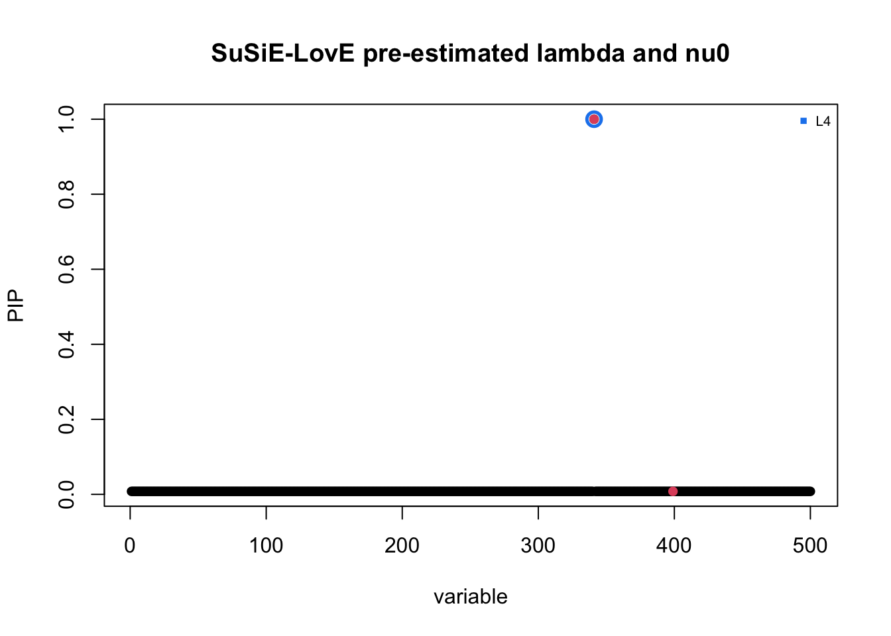
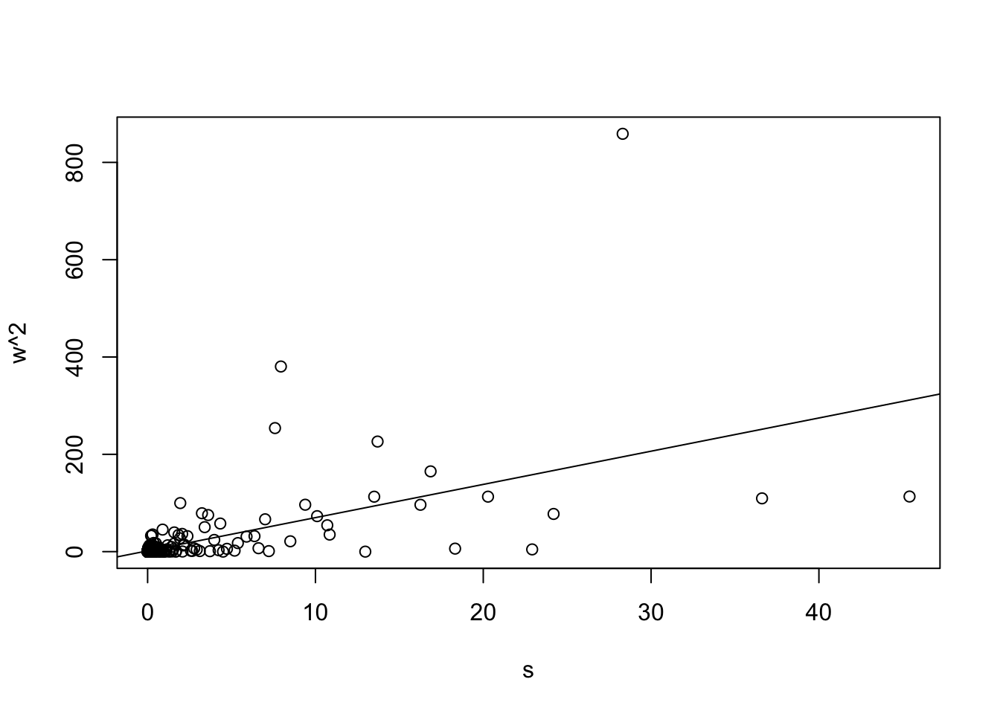
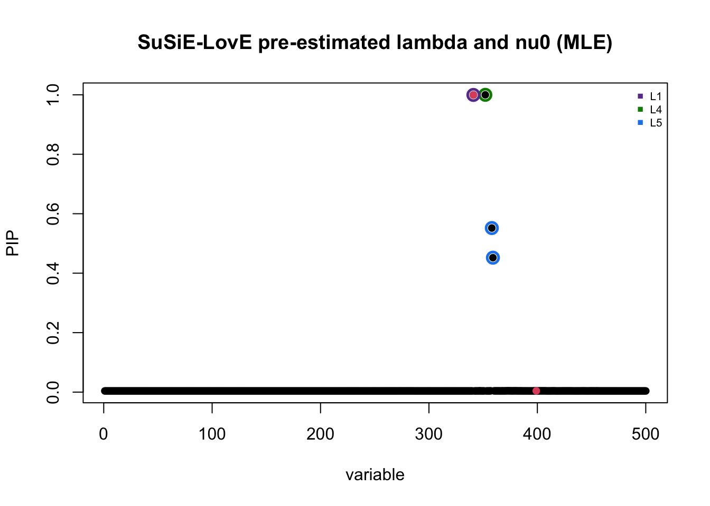
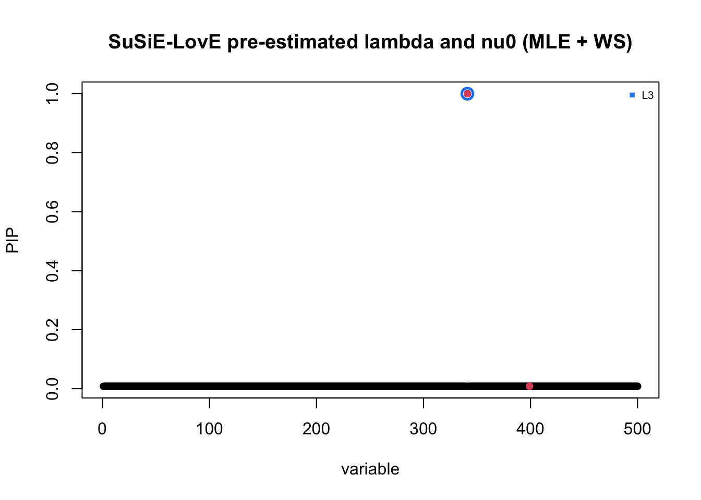
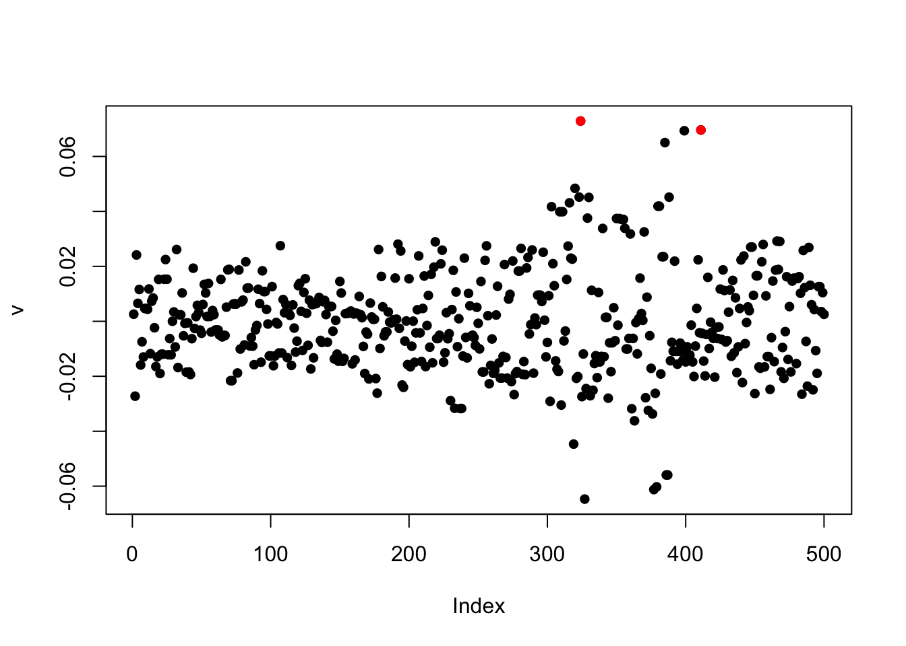
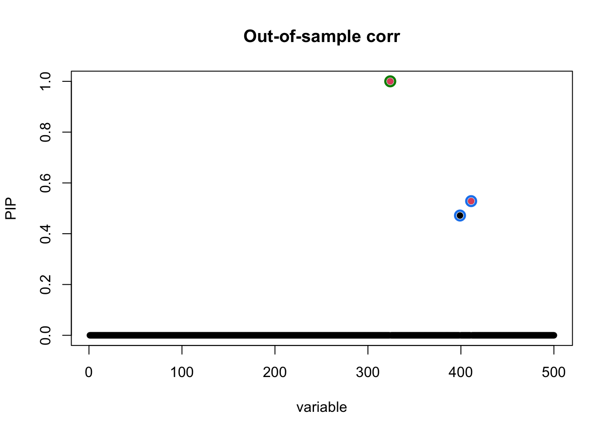
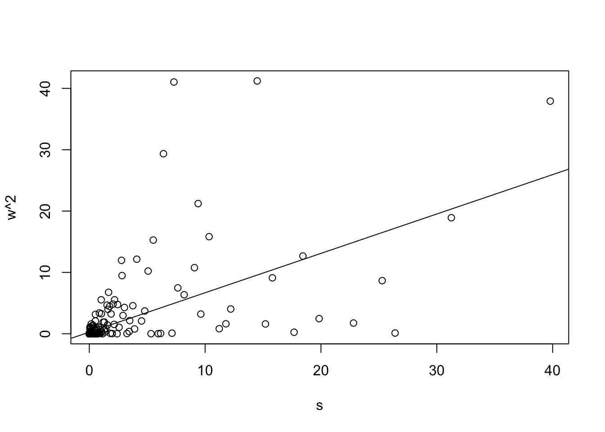
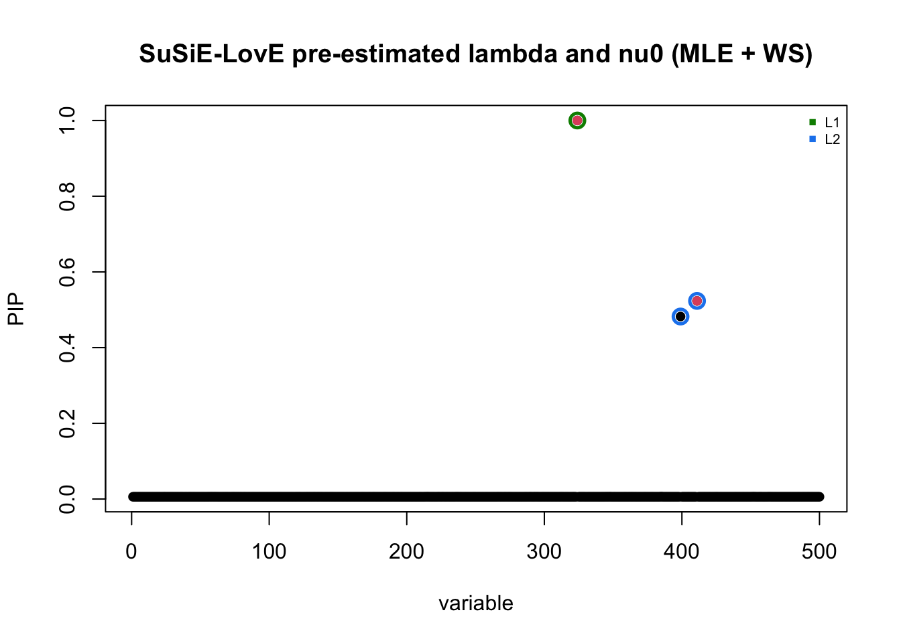

Silly R0 leads to very small nu0 and conservative estimate?
dodat-stats
2026-06-04
Last updated: 2026-06-11
Checks: 7 0
Knit directory: susie_love_experiments/
This reproducible R Markdown analysis was created with workflowr (version 1.7.2). The Checks tab describes the reproducibility checks that were applied when the results were created. The Past versions tab lists the development history.
Great! Since the R Markdown file has been committed to the Git repository, you know the exact version of the code that produced these results.
Great job! The global environment was empty. Objects defined in the global environment can affect the analysis in your R Markdown file in unknown ways. For reproduciblity it’s best to always run the code in an empty environment.
The command set.seed(20260419) was run prior to running
the code in the R Markdown file. Setting a seed ensures that any results
that rely on randomness, e.g. subsampling or permutations, are
reproducible.
Great job! Recording the operating system, R version, and package versions is critical for reproducibility.
Nice! There were no cached chunks for this analysis, so you can be confident that you successfully produced the results during this run.
Great job! Using relative paths to the files within your workflowr project makes it easier to run your code on other machines.
Great! You are using Git for version control. Tracking code development and connecting the code version to the results is critical for reproducibility.
The results in this page were generated with repository version 77c2873. See the Past versions tab to see a history of the changes made to the R Markdown and HTML files.
Note that you need to be careful to ensure that all relevant files for
the analysis have been committed to Git prior to generating the results
(you can use wflow_publish or
wflow_git_commit). workflowr only checks the R Markdown
file, but you know if there are other scripts or data files that it
depends on. Below is the status of the Git repository when the results
were generated:
Ignored files:
Ignored: .DS_Store
Ignored: .Rhistory
Ignored: .Rproj.user/
Note that any generated files, e.g. HTML, png, CSS, etc., are not included in this status report because it is ok for generated content to have uncommitted changes.
These are the previous versions of the repository in which changes were
made to the R Markdown
(analysis/high-mismatch-tiny-nu0.Rmd) and HTML
(docs/high-mismatch-tiny-nu0.html) files. If you’ve
configured a remote Git repository (see ?wflow_git_remote),
click on the hyperlinks in the table below to view the files as they
were in that past version.
| File | Version | Author | Date | Message |
|---|---|---|---|---|
| Rmd | 77c2873 | dodat-stats | 2026-06-11 | updated high mismatch analysis |
| html | f11cfe9 | dodat-stats | 2026-06-05 | Build site. |
| Rmd | 2449e63 | dodat-stats | 2026-06-05 | Add new analyses |
1. Aim
We investigate to see if using a very mismatched R0 leads to small \(\nu_0\).
SPOIL: It actually does not lead to a small \(\nu_0\). Ironically, the regularization strength \(\lambda\) matters so much more than the discrepancy between \(v\) and out-of-sample \(R\) in deciding the optimal \(\nu_0\)… We have had automatic way to decide \(\lambda\), but it only depends on \(N_0\). Therefore in this case, where \(R0\) is way different than \(R\), but because \(N_0\) is the same, \(\lambda\) is the same and leads to quite large \(\nu_0\), which leads to more borrowing of information than we like, and leads to more false positive.
From a bright side, the current implementation is good when \(R_0\) is not too mismatched though (mismatch but not super far away from \(R\) (like divergence from a few hundred years apart), like in the previous workflow file).
Anyway, let’s see it in action. We generate R from Asian population and R0 from European population.
2. An example
2.1. Generate silly R0
sim_asn_eur <- function(chrom, start, end, n_gwas, n_ref, J, h2, seed) {
stdpopsim <- reticulate::import("stdpopsim")
msprime <- reticulate::import("msprime")
set.seed(seed)
# 1. Get Realistic Genetic Map from stdpopsim
species <- stdpopsim$get_species("HomSap")
contig <- species$get_contig(chrom, left = as.integer(start), right = as.integer(end))
# 2. Get OutOfAfrica_3G09 Demography (YRI, CEU, CHB)
demo_model <- species$get_demographic_model("OutOfAfrica_3G09")
demography <- demo_model$model
# 3. Run Simulation
ts <- msprime$sim_ancestry(
samples = reticulate::dict(CHB = as.integer(n_gwas), CEU = as.integer(n_ref)),
demography = demography,
recombination_rate = contig$recombination_map,
random_seed = as.integer(seed)
)
ts <- msprime$sim_mutations(ts, rate = 1.29e-8, random_seed = as.integer(seed))
# 4. Extract Genotypes
chb_id <- NULL
ceu_id <- NULL
for (p in reticulate::iterate(ts$populations())) {
if (!is.null(p$metadata) && p$metadata$name == "CHB") chb_id <- p$id
if (!is.null(p$metadata) && p$metadata$name == "CEU") ceu_id <- p$id
}
samples_gwas <- ts$samples(population = as.integer(chb_id))
samples_ref <- ts$samples(population = as.integer(ceu_id))
G_all <- ts$genotype_matrix()
to_diploid <- function(hap_idx) {
idx <- as.integer(hap_idx) + 1
g_hap <- G_all[, idx, drop = FALSE]
g_dip <- g_hap[, seq(1, ncol(g_hap), by = 2)] + g_hap[, seq(2, ncol(g_hap), by = 2)]
return(t(g_dip))
}
G_gwas <- to_diploid(samples_gwas)
G_ref <- to_diploid(samples_ref)
# 5. Filter for Common Variants (MAF > 5%)
maf_gwas <- colMeans(G_gwas) / 2
maf_ref <- colMeans(G_ref) / 2
common_mask <- (maf_gwas > 0.05) & (maf_gwas < 0.95) & (maf_ref > 0.05) & (maf_ref < 0.95)
n_common <- sum(common_mask)
if (n_common < J) stop(paste0("Only ", n_common, " common variants found but J = ", J, ". Try a larger region."))
G_gwas <- G_gwas[, common_mask, drop = FALSE]
G_ref <- G_ref[, common_mask, drop = FALSE]
J_all <- min(ncol(G_gwas), J)
max_start <- J_all - J
start_idx <- if (max_start > 0) sample(0:max_start, 1) else 0
cols_to_keep <- (start_idx + 1):(start_idx + J)
G <- G_gwas[, cols_to_keep, drop = FALSE]
G0 <- G_ref[, cols_to_keep, drop = FALSE]
# 6. Generate summary stats
X <- sweep(G, 2, colMeans(G), "-")
N <- nrow(X)
G0_centered <- sweep(G0, 2, colMeans(G0), "-")
R0 <- stats::cov(G0_centered)
R0[is.na(R0)] <- 0
R <- stats::cov(X)
R[is.na(R)] <- 0
num_causal <- 2
first_causal_SNP <- sample(1:J, 1)
second_causal_SNP <- which.min(R[first_causal_SNP, ]^2)
causal_SNPs_loc <- c(first_causal_SNP, second_causal_SNP)
beta_true <- rep(0, J)
beta_true[causal_SNPs_loc] <- stats::runif(num_causal) + 0.01
var_expl <- sum((X %*% beta_true)^2 / N)
scale <- h2 / var_expl
beta_true <- beta_true * sqrt(scale)
y <- (X %*% beta_true) + sqrt(1 - h2) * stats::rnorm(N)
y_std <- sqrt(sum((y - mean(y))^2) / N)
y <- (y - mean(y)) / y_std
v <- (t(X) %*% y) / N
return(list(
v = as.vector(v),
R = R,
R0 = R0,
beta_true = beta_true,
causal_SNPs_loc = causal_SNPs_loc
))
}
seed = 2
chrom <- "chr22"
start <- 20e6
end <- 21e6
N <- 25000L
N0 = 500L
J <- 500L
h2 <- 0.01
res <- sim_asn_eur(chrom, start, end,
n_gwas = N,
n_ref = N0,
J = J,
h2 = h2,
seed = seed)
v <- res$v
R <- res$R
R0 <- res$R0
beta_true <- res$beta_true
causal_SNPs_loc <- res$causal_SNPs_loc
## standardized
d = 1 / sqrt(diag(R))
v = d * v
R = cov2cor(R)
R0 = cov2cor(R0)
plot(v, pch = 16)
points(causal_SNPs_loc, v[causal_SNPs_loc], pch = 16, col = "red")
| Version | Author | Date |
|---|---|---|
| f11cfe9 | dodat-stats | 2026-06-05 |
2.2 Visualize two correlation matrices
Sorry the color scheme is a bit hard to see but if we squeeze our eyes a bit then we can see that the two matrices are totally different.
par(mfrow = c(1, 2))
image(R0[1:100, 1:100], main = "Out-of-sample (EUR)", col = heat.colors(15))
image(R[1:100, 1:100], main = "In-sample corr (CHB)", col = heat.colors(15))
| Version | Author | Date |
|---|---|---|
| f11cfe9 | dodat-stats | 2026-06-05 |
par(mfrow = c(1, 1))
2.3 Fit susie with in-sample R
fit_R <- susie_suff_stat(
XtX = N * R,
Xty = N * v,
n = N,
yty = N,
L = 5
)
susie_plot(fit_R, y = "PIP", b = beta_true, main = "In-sample cov mat")
| Version | Author | Date |
|---|---|---|
| f11cfe9 | dodat-stats | 2026-06-05 |
2.4 Fit susie with silly R
fit_R_silly <- susie_suff_stat(
XtX = N * R0,
Xty = N * v,
n = N,
yty = N,
L = 5,
residual_variance = 1
)
susie_plot(fit_R_silly, y = "PIP", b = beta_true, main = "Silly corr mat")
| Version | Author | Date |
|---|---|---|
| f11cfe9 | dodat-stats | 2026-06-05 |
Slightly regularized
R_tilde = (1 - 1 / N0) * R0 + 1 / N0 * diag(J)
fit_R0 <- susie_suff_stat(
XtX = N * R0,
Xty = N * v,
n = N,
yty = N,
L = 5
)
susie_plot(fit_R_silly, y = "PIP", b = beta_true, main = "Silly corr mat")
| Version | Author | Date |
|---|---|---|
| f11cfe9 | dodat-stats | 2026-06-05 |
print(summary(fit_R0)$cs)
#> cs cs_log10bf cs_avg_r2 cs_min_r2 variable
#> 1 1 158.53519 1.0000000 1.0000000 341
#> 2 3 58.96533 1.0000000 1.0000000 406
#> 3 4 2874.95762 1.0000000 1.0000000 352
#> 4 5 2953.34492 1.0000000 1.0000000 358
#> 5 2 79.08453 0.9949025 0.9923586 372,373,3742.5 Fit susielove with silly R
R_out <- compute_wen_stephens(R_0 = R_tilde, N_ref = N0)
# R_out = diag(J)
# R_out = R_tilde
k <- min(N0, J)
diag_R = diag(R)
love_res_WS <- susie_love_lambda(v, R_out, diag_R,
lambda = 0,
N, L = 5,
k,
nu_delta_init = 500,
step_susie = 20,
step_R = 30,
step_nu = 10,
max_iter = 30,
tol = 1e-4)
#> Iter 1 | Loss: -0.6490 | nu_q: 574.6 | nu_delta: 571.0
#> Iter 2 | Loss: -0.8620 | nu_q: 554.7 | nu_delta: 549.5
#> Iter 3 | Loss: -0.9295 | nu_q: 518.2 | nu_delta: 512.3
#> Iter 4 | Loss: -0.9642 | nu_q: 496.1 | nu_delta: 489.7
#> Iter 5 | Loss: -0.9829 | nu_q: 482.1 | nu_delta: 475.3
#> Iter 6 | Loss: -0.9943 | nu_q: 468.3 | nu_delta: 461.1
#> Iter 7 | Loss: -1.0015 | nu_q: 461.2 | nu_delta: 453.9
#> Iter 8 | Loss: -1.0060 | nu_q: 455.4 | nu_delta: 447.8
#> Iter 9 | Loss: -1.0089 | nu_q: 451.5 | nu_delta: 443.7
#> Iter 10 | Loss: -1.0110 | nu_q: 448.7 | nu_delta: 440.7
#> Iter 11 | Loss: -1.0125 | nu_q: 446.8 | nu_delta: 438.7
#> Iter 12 | Loss: -1.0142 | nu_q: 442.4 | nu_delta: 434.2
#> Iter 13 | Loss: -1.0154 | nu_q: 442.1 | nu_delta: 433.7
#> Iter 14 | Loss: -1.0161 | nu_q: 441.4 | nu_delta: 432.8
#> Iter 15 | Loss: -1.0166 | nu_q: 441.0 | nu_delta: 432.3
#> Iter 16 | Loss: -1.0170 | nu_q: 440.1 | nu_delta: 431.3
#> Iter 17 | Loss: -1.0174 | nu_q: 439.9 | nu_delta: 431.0
#> Iter 18 | Loss: -1.0174 | nu_q: 439.9 | nu_delta: 431.0
#> Converged at iteration 18
b_res <- love_res_WS$b_res
R_q <- love_res_WS$R_q
susie_plot_alpha(
alpha = b_res$alpha,
R = cov2cor(R_q),
b = beta_true,
main = paste0("SuSiE-LovE with WS shrinkage")
)
| Version | Author | Date |
|---|---|---|
| f11cfe9 | dodat-stats | 2026-06-05 |
Let’s try again with fixed and small \(\nu_0\): It indeed leads to conservative behavior. But how to produce this small \(\nu_0\)???
nu_q = 10
nu_0 = 1
lambda = 1 / N0
susie_love_small_nu <- susie_love_fix_2params(v, R_out, diag_R,
lambda, nu_q, nu_0,
N, L = 5,
k,
z_init = NULL,
step_susie = 20,
step_R = 30,
step_nu = 30,
max_iter = 100,
max_iter_init = 100,
tol = 1e-4)
#> Iter 1 | Loss: 87.8778 | nu_q: 11.9 | nu_0: 1.0
#> Iter 2 | Loss: 60.7674 | nu_q: 12.1 | nu_0: 1.0
#> Iter 3 | Loss: 53.5714 | nu_q: 11.8 | nu_0: 1.0
#> Iter 4 | Loss: 47.5530 | nu_q: 11.4 | nu_0: 1.0
#> Iter 5 | Loss: 44.3517 | nu_q: 11.3 | nu_0: 1.0
#> Iter 6 | Loss: 42.0225 | nu_q: 11.0 | nu_0: 1.0
#> Iter 7 | Loss: 40.5075 | nu_q: 10.9 | nu_0: 1.0
#> Iter 8 | Loss: 39.0307 | nu_q: 10.7 | nu_0: 1.0
#> Iter 9 | Loss: 38.0580 | nu_q: 10.5 | nu_0: 1.0
#> Iter 10 | Loss: 37.3536 | nu_q: 10.3 | nu_0: 1.0
#> Iter 11 | Loss: 36.7980 | nu_q: 10.2 | nu_0: 1.0
#> Iter 12 | Loss: 36.2580 | nu_q: 10.0 | nu_0: 1.0
#> Iter 13 | Loss: 35.7986 | nu_q: 9.9 | nu_0: 1.0
#> Iter 14 | Loss: 35.3795 | nu_q: 9.7 | nu_0: 1.0
#> Iter 15 | Loss: 35.0358 | nu_q: 9.6 | nu_0: 1.0
#> Iter 16 | Loss: 34.7345 | nu_q: 9.5 | nu_0: 1.0
#> Iter 17 | Loss: 34.4930 | nu_q: 9.4 | nu_0: 1.0
#> Iter 18 | Loss: 34.2696 | nu_q: 9.3 | nu_0: 1.0
#> Iter 19 | Loss: 34.0504 | nu_q: 9.2 | nu_0: 1.0
#> Iter 20 | Loss: 33.8703 | nu_q: 9.1 | nu_0: 1.0
#> Iter 21 | Loss: 33.6940 | nu_q: 9.0 | nu_0: 1.0
#> Iter 22 | Loss: 33.5395 | nu_q: 9.0 | nu_0: 1.0
#> Iter 23 | Loss: 33.3781 | nu_q: 8.9 | nu_0: 1.0
#> Iter 24 | Loss: 33.2222 | nu_q: 8.8 | nu_0: 1.0
#> Iter 25 | Loss: 33.0875 | nu_q: 8.8 | nu_0: 1.0
#> Iter 26 | Loss: 32.9667 | nu_q: 8.7 | nu_0: 1.0
#> Iter 27 | Loss: 32.8534 | nu_q: 8.7 | nu_0: 1.0
#> Iter 28 | Loss: 32.7189 | nu_q: 8.6 | nu_0: 1.0
#> Iter 29 | Loss: 32.5774 | nu_q: 8.6 | nu_0: 1.0
#> Iter 30 | Loss: 32.4721 | nu_q: 8.5 | nu_0: 1.0
#> Iter 31 | Loss: 32.3664 | nu_q: 8.5 | nu_0: 1.0
#> Iter 32 | Loss: 32.2627 | nu_q: 8.5 | nu_0: 1.0
#> Iter 33 | Loss: 32.1457 | nu_q: 8.4 | nu_0: 1.0
#> Iter 34 | Loss: 32.0420 | nu_q: 8.4 | nu_0: 1.0
#> Iter 35 | Loss: 31.9443 | nu_q: 8.4 | nu_0: 1.0
#> Iter 36 | Loss: 31.8493 | nu_q: 8.4 | nu_0: 1.0
#> Iter 37 | Loss: 31.7662 | nu_q: 8.4 | nu_0: 1.0
#> Iter 38 | Loss: 31.6882 | nu_q: 8.4 | nu_0: 1.0
#> Iter 39 | Loss: 31.5890 | nu_q: 8.4 | nu_0: 1.0
#> Iter 40 | Loss: 31.4944 | nu_q: 8.4 | nu_0: 1.0
#> Iter 41 | Loss: 31.4040 | nu_q: 8.4 | nu_0: 1.0
#> Iter 42 | Loss: 31.3221 | nu_q: 8.4 | nu_0: 1.0
#> Iter 43 | Loss: 31.2481 | nu_q: 8.3 | nu_0: 1.0
#> Iter 44 | Loss: 31.1745 | nu_q: 8.3 | nu_0: 1.0
#> Iter 45 | Loss: 31.1074 | nu_q: 8.3 | nu_0: 1.0
#> Iter 46 | Loss: 31.0369 | nu_q: 8.3 | nu_0: 1.0
#> Iter 47 | Loss: 30.9516 | nu_q: 8.3 | nu_0: 1.0
#> Iter 48 | Loss: 30.8486 | nu_q: 8.3 | nu_0: 1.0
#> Iter 49 | Loss: 30.7462 | nu_q: 8.3 | nu_0: 1.0
#> Iter 50 | Loss: 30.6466 | nu_q: 8.3 | nu_0: 1.0
#> Iter 51 | Loss: 30.5203 | nu_q: 8.4 | nu_0: 1.0
#> Iter 52 | Loss: 30.3827 | nu_q: 8.4 | nu_0: 1.0
#> Iter 53 | Loss: 30.2679 | nu_q: 8.4 | nu_0: 1.0
#> Iter 54 | Loss: 30.1381 | nu_q: 8.4 | nu_0: 1.0
#> Iter 55 | Loss: 29.9923 | nu_q: 8.4 | nu_0: 1.0
#> Iter 56 | Loss: 29.8393 | nu_q: 8.4 | nu_0: 1.0
#> Iter 57 | Loss: 29.7480 | nu_q: 8.5 | nu_0: 1.0
#> Iter 58 | Loss: 29.6483 | nu_q: 8.5 | nu_0: 1.0
#> Iter 59 | Loss: 29.5187 | nu_q: 8.5 | nu_0: 1.0
#> Iter 60 | Loss: 29.4063 | nu_q: 8.5 | nu_0: 1.0
#> Iter 61 | Loss: 29.2932 | nu_q: 8.6 | nu_0: 1.0
#> Iter 62 | Loss: 29.1884 | nu_q: 8.6 | nu_0: 1.0
#> Iter 63 | Loss: 29.0998 | nu_q: 8.6 | nu_0: 1.0
#> Iter 64 | Loss: 29.0028 | nu_q: 8.6 | nu_0: 1.0
#> Iter 65 | Loss: 28.9284 | nu_q: 8.6 | nu_0: 1.0
#> Iter 66 | Loss: 28.8543 | nu_q: 8.6 | nu_0: 1.0
#> Iter 67 | Loss: 28.7990 | nu_q: 8.7 | nu_0: 1.0
#> Iter 68 | Loss: 28.7199 | nu_q: 8.7 | nu_0: 1.0
#> Iter 69 | Loss: 28.6708 | nu_q: 8.7 | nu_0: 1.0
#> Iter 70 | Loss: 28.6162 | nu_q: 8.7 | nu_0: 1.0
#> Iter 71 | Loss: 28.5611 | nu_q: 8.7 | nu_0: 1.0
#> Iter 72 | Loss: 28.5095 | nu_q: 8.7 | nu_0: 1.0
#> Iter 73 | Loss: 28.4622 | nu_q: 8.8 | nu_0: 1.0
#> Iter 74 | Loss: 28.4145 | nu_q: 8.8 | nu_0: 1.0
#> Iter 75 | Loss: 28.3683 | nu_q: 8.8 | nu_0: 1.0
#> Iter 76 | Loss: 28.3245 | nu_q: 8.8 | nu_0: 1.0
#> Iter 77 | Loss: 28.2873 | nu_q: 8.8 | nu_0: 1.0
#> Iter 78 | Loss: 28.2340 | nu_q: 8.8 | nu_0: 1.0
#> Iter 79 | Loss: 28.1875 | nu_q: 8.9 | nu_0: 1.0
#> Iter 80 | Loss: 28.1364 | nu_q: 8.9 | nu_0: 1.0
#> Iter 81 | Loss: 28.0606 | nu_q: 8.9 | nu_0: 1.0
#> Iter 82 | Loss: 27.9926 | nu_q: 8.9 | nu_0: 1.0
#> Iter 83 | Loss: 27.9274 | nu_q: 9.0 | nu_0: 1.0
#> Iter 84 | Loss: 27.8820 | nu_q: 9.0 | nu_0: 1.0
#> Iter 85 | Loss: 27.8351 | nu_q: 9.0 | nu_0: 1.0
#> Iter 86 | Loss: 27.8002 | nu_q: 9.0 | nu_0: 1.0
#> Iter 87 | Loss: 27.7636 | nu_q: 9.0 | nu_0: 1.0
#> Iter 88 | Loss: 27.7250 | nu_q: 9.1 | nu_0: 1.0
#> Iter 89 | Loss: 27.6837 | nu_q: 9.1 | nu_0: 1.0
#> Iter 90 | Loss: 27.6497 | nu_q: 9.1 | nu_0: 1.0
#> Iter 91 | Loss: 27.6172 | nu_q: 9.1 | nu_0: 1.0
#> Iter 92 | Loss: 27.5839 | nu_q: 9.1 | nu_0: 1.0
#> Iter 93 | Loss: 27.5467 | nu_q: 9.2 | nu_0: 1.0
#> Iter 94 | Loss: 27.5121 | nu_q: 9.2 | nu_0: 1.0
#> Iter 95 | Loss: 27.4781 | nu_q: 9.2 | nu_0: 1.0
#> Iter 96 | Loss: 27.4464 | nu_q: 9.2 | nu_0: 1.0
#> Iter 97 | Loss: 27.4105 | nu_q: 9.2 | nu_0: 1.0
#> Iter 98 | Loss: 27.3671 | nu_q: 9.2 | nu_0: 1.0
#> Iter 99 | Loss: 27.3316 | nu_q: 9.3 | nu_0: 1.0
#> Iter 100 | Loss: 27.2965 | nu_q: 9.3 | nu_0: 1.0
b_res <- susie_love_small_nu$b_res
R_q <- susie_love_small_nu$R_q
susie_plot_alpha(
alpha = b_res$alpha,
R = cov2cor(R_q),
b = beta_true,
main = paste0("SuSiE-LovE with small nu0 = ", nu_0)
)
| Version | Author | Date |
|---|---|---|
| f11cfe9 | dodat-stats | 2026-06-05 |
3. Trying to achieve conservative behavior when the mismatch is large
As discussed, the current way to choose \(\lambda\) only depends on \(N_0\), but not on how “mismatched” \(R_0\) and \(v\) is.
Going back to our desire to learn \(\lambda\) as a device to measure the mismatch between \(v\) and \(R_0\). We have learned the following:
Learning \(\lambda\) under the null model is good.
But under the VI of susie-love, the ELBO prefers large \(\lambda\) (and also large \(\nu_0\)), leading to FDR.
But intuitively, large \(\lambda\) means large mismatch, which should lead to small \(\nu_0\) instead.
One way to rescue this is to fix \(\delta\): Indeed, in this case, \(\lambda = \dfrac{\delta}{\delta + \nu_0}\), which is inversely proportional to \(\nu_0\) and it makes more sense.
Therefore, we can consider the following procedure of estimating \(\delta\) and \(\nu_0\) from data:
First fit the susieR with the out-of-sample LD \(R_0\) and chosen \(L\) (say \(L = 5\)) to get the posterior mean \(\bar{b}\), then get the “estimated null” \(v_0 = \sqrt{N}(v - R_0 \bar{b})\)
Estimate \(\lambda\) from the MLE of the null model \(\sqrt{N} v_0 \sim (0, (1 - \lambda) R_0 + \lambda I)\) (or the moment method; see the file
learn-nu0-lambda.texon Overleaf).Set \(\nu_0 = \dfrac{\delta (1 - \lambda)}{\lambda}\).
This is still estimating the prior from data (so it still has “empirical Bayes” spirit). Let’s see how it works
3.1. Trying with severely mismatched data
moment_estimate_lambda <- function(v0, R0, N){
eig = eigen(R0)
U = eig$vectors
s = eig$values
w = sqrt(N) * t(U) %*% v0
lin_mod = lm(w^2 ~ s)
slope = lin_mod$coefficients[[2]] # tau^2 * (1 - lambda)
intercept = lin_mod$coefficients[[1]] # tau^2 * lambda
odds = intercept / slope
lambda_est = odds / (1 + odds)
lambda_est
}maximize_log_pdf <- function(R0, v, N) {
J <- length(v)
R0 <- (R0 + t(R0)) / 2
eig <- eigen(R0, symmetric = TRUE)
# Clamp any floating-point negative eigenvalues to exactly 0
d <- pmax(eig$values, 0)
v_tilde <- as.numeric(crossprod(eig$vectors, v))
# Optimize over log_nu0 to keep parameter scales identical
neg_log_pdf <- function(params) {
lambda <- params[1]
nu0 <- exp(params[2]) # Decode log(nu0)
d_lambda <- (1 - lambda) * d + lambda
log_det <- sum(log(d_lambda))
qf <- N * sum((v_tilde^2) / d_lambda)
inner_log <- 1 + (1 / nu0) * qf
term1 <- lgamma((nu0 + J + 2) / 2)
term2 <- lgamma((nu0 + 2) / 2)
term3 <- (J / 2) * log(nu0 * pi)
term4 <- 0.5 * log_det
term5 <- ((nu0 + J + 2) / 2) * log(inner_log)
log_lik <- term1 - term2 - term3 - term4 - term5
# Scale objective by J to prevent gradient collapse in finite-differencing
return(-log_lik / J)
}
init_lambda <- 0.5
init_log_nu0 <- log(5.0)
epsilon <- 1e-5
# nlminb is significantly more robust for this topology
opt_res <- nlminb(
start = c(init_lambda, init_log_nu0),
objective = neg_log_pdf,
lower = c(epsilon, log(epsilon)),
upper = c(1 - epsilon, log(1e5))
)
return(list(
lambda = opt_res$par[1],
nu_0 = exp(opt_res$par[2]),
# Scale the objective back up by J to get true log likelihood
max_log_pdf = -opt_res$objective * J,
convergence = opt_res$convergence, # 0 means successful
message = opt_res$message
))
}3.1.1. Moment estimate
library(susieR)
fit_R_silly <- susie_suff_stat(
XtX = N * R0,
Xty = N * v,
n = N,
yty = N,
L = 5,
residual_variance = 1
)
b_bar = colSums(fit_R_silly$alpha * fit_R_silly$mu)
v0 = v - R0 %*% b_bar
lambda_est = moment_estimate_lambda(v0, R0, N)
lambda_est
#> [1] 0.1920772delta = 1
nu0 = delta * (1 - lambda_est) / lambda_est
nu0
#> [1] 4.20624lambda <- lambda_est
diag_R <- diag(R)
k <- min(N0, J)
nu_q = nu0 + 1
susie_love_pre_est_lambda <- susie_love_fix_2params(v, R0, diag_R,
lambda, nu_q, nu_0 = nu0 + delta,
N, L = 5,
k,
z_init = NULL,
step_susie = 20,
step_R = 30,
step_nu = 50,
max_iter = 500,
max_iter_init = 100,
tol = 1e-4)
#> Iter 1 | Loss: 20.5785 | nu_q: 5.7 | nu_0: 5.2
#> Iter 2 | Loss: 17.6184 | nu_q: 6.2 | nu_0: 5.2
#> Iter 3 | Loss: 16.4915 | nu_q: 6.6 | nu_0: 5.2
#> Iter 4 | Loss: 15.6609 | nu_q: 6.9 | nu_0: 5.2
#> Iter 5 | Loss: 15.0603 | nu_q: 7.3 | nu_0: 5.2
#> Iter 6 | Loss: 14.5527 | nu_q: 7.6 | nu_0: 5.2
#> Iter 7 | Loss: 14.0993 | nu_q: 7.9 | nu_0: 5.2
#> Iter 8 | Loss: 13.6841 | nu_q: 8.3 | nu_0: 5.2
#> Iter 9 | Loss: 13.3210 | nu_q: 8.6 | nu_0: 5.2
#> Iter 10 | Loss: 12.9948 | nu_q: 8.9 | nu_0: 5.2
#> Iter 11 | Loss: 12.6751 | nu_q: 9.2 | nu_0: 5.2
#> Iter 12 | Loss: 12.3704 | nu_q: 9.5 | nu_0: 5.2
#> Iter 13 | Loss: 12.0684 | nu_q: 9.8 | nu_0: 5.2
#> Iter 14 | Loss: 11.7939 | nu_q: 10.1 | nu_0: 5.2
#> Iter 15 | Loss: 11.5330 | nu_q: 10.4 | nu_0: 5.2
#> Iter 16 | Loss: 11.2683 | nu_q: 10.7 | nu_0: 5.2
#> Iter 17 | Loss: 11.0216 | nu_q: 11.0 | nu_0: 5.2
#> Iter 18 | Loss: 10.8135 | nu_q: 11.3 | nu_0: 5.2
#> Iter 19 | Loss: 10.6037 | nu_q: 11.6 | nu_0: 5.2
#> Iter 20 | Loss: 10.4118 | nu_q: 11.9 | nu_0: 5.2
#> Iter 21 | Loss: 10.2354 | nu_q: 12.2 | nu_0: 5.2
#> Iter 22 | Loss: 10.0547 | nu_q: 12.5 | nu_0: 5.2
#> Iter 23 | Loss: 9.8858 | nu_q: 12.8 | nu_0: 5.2
#> Iter 24 | Loss: 9.7383 | nu_q: 13.1 | nu_0: 5.2
#> Iter 25 | Loss: 9.5921 | nu_q: 13.4 | nu_0: 5.2
#> Iter 26 | Loss: 9.4498 | nu_q: 13.7 | nu_0: 5.2
#> Iter 27 | Loss: 9.3208 | nu_q: 14.0 | nu_0: 5.2
#> Iter 28 | Loss: 9.1896 | nu_q: 14.3 | nu_0: 5.2
#> Iter 29 | Loss: 9.0450 | nu_q: 14.6 | nu_0: 5.2
#> Iter 30 | Loss: 8.8894 | nu_q: 14.9 | nu_0: 5.2
#> Iter 31 | Loss: 8.7434 | nu_q: 15.3 | nu_0: 5.2
#> Iter 32 | Loss: 8.6015 | nu_q: 15.5 | nu_0: 5.2
#> Iter 33 | Loss: 8.4440 | nu_q: 15.8 | nu_0: 5.2
#> Iter 34 | Loss: 8.2836 | nu_q: 16.1 | nu_0: 5.2
#> Iter 35 | Loss: 8.1008 | nu_q: 16.4 | nu_0: 5.2
#> Iter 36 | Loss: 7.9370 | nu_q: 16.7 | nu_0: 5.2
#> Iter 37 | Loss: 7.7616 | nu_q: 17.0 | nu_0: 5.2
#> Iter 38 | Loss: 7.5977 | nu_q: 17.3 | nu_0: 5.2
#> Iter 39 | Loss: 7.4670 | nu_q: 17.6 | nu_0: 5.2
#> Iter 40 | Loss: 7.3584 | nu_q: 17.9 | nu_0: 5.2
#> Iter 41 | Loss: 7.2727 | nu_q: 18.3 | nu_0: 5.2
#> Iter 42 | Loss: 7.1940 | nu_q: 18.6 | nu_0: 5.2
#> Iter 43 | Loss: 7.1231 | nu_q: 18.9 | nu_0: 5.2
#> Iter 44 | Loss: 7.0560 | nu_q: 19.2 | nu_0: 5.2
#> Iter 45 | Loss: 6.9920 | nu_q: 19.5 | nu_0: 5.2
#> Iter 46 | Loss: 6.9323 | nu_q: 19.9 | nu_0: 5.2
#> Iter 47 | Loss: 6.8749 | nu_q: 20.2 | nu_0: 5.2
#> Iter 48 | Loss: 6.8205 | nu_q: 20.5 | nu_0: 5.2
#> Iter 49 | Loss: 6.7690 | nu_q: 20.8 | nu_0: 5.2
#> Iter 50 | Loss: 6.7197 | nu_q: 21.1 | nu_0: 5.2
#> Iter 51 | Loss: 6.6738 | nu_q: 21.4 | nu_0: 5.2
#> Iter 52 | Loss: 6.6303 | nu_q: 21.7 | nu_0: 5.2
#> Iter 53 | Loss: 6.5884 | nu_q: 21.9 | nu_0: 5.2
#> Iter 54 | Loss: 6.5499 | nu_q: 22.2 | nu_0: 5.2
#> Iter 55 | Loss: 6.5133 | nu_q: 22.5 | nu_0: 5.2
#> Iter 56 | Loss: 6.4781 | nu_q: 22.8 | nu_0: 5.2
#> Iter 57 | Loss: 6.4452 | nu_q: 23.0 | nu_0: 5.2
#> Iter 58 | Loss: 6.4138 | nu_q: 23.3 | nu_0: 5.2
#> Iter 59 | Loss: 6.3836 | nu_q: 23.6 | nu_0: 5.2
#> Iter 60 | Loss: 6.3553 | nu_q: 23.8 | nu_0: 5.2
#> Iter 61 | Loss: 6.3281 | nu_q: 24.1 | nu_0: 5.2
#> Iter 62 | Loss: 6.3021 | nu_q: 24.3 | nu_0: 5.2
#> Iter 63 | Loss: 6.2775 | nu_q: 24.6 | nu_0: 5.2
#> Iter 64 | Loss: 6.2546 | nu_q: 24.8 | nu_0: 5.2
#> Iter 65 | Loss: 6.2322 | nu_q: 25.1 | nu_0: 5.2
#> Iter 66 | Loss: 6.2106 | nu_q: 25.3 | nu_0: 5.2
#> Iter 67 | Loss: 6.1906 | nu_q: 25.5 | nu_0: 5.2
#> Iter 68 | Loss: 6.1716 | nu_q: 25.8 | nu_0: 5.2
#> Iter 69 | Loss: 6.1528 | nu_q: 26.0 | nu_0: 5.2
#> Iter 70 | Loss: 6.1354 | nu_q: 26.2 | nu_0: 5.2
#> Iter 71 | Loss: 6.1183 | nu_q: 26.5 | nu_0: 5.2
#> Iter 72 | Loss: 6.1028 | nu_q: 26.7 | nu_0: 5.2
#> Iter 73 | Loss: 6.0872 | nu_q: 26.9 | nu_0: 5.2
#> Iter 74 | Loss: 6.0715 | nu_q: 27.1 | nu_0: 5.2
#> Iter 75 | Loss: 6.0555 | nu_q: 27.3 | nu_0: 5.2
#> Iter 76 | Loss: 6.0391 | nu_q: 27.6 | nu_0: 5.2
#> Iter 77 | Loss: 6.0243 | nu_q: 27.8 | nu_0: 5.2
#> Iter 78 | Loss: 6.0056 | nu_q: 28.0 | nu_0: 5.2
#> Iter 79 | Loss: 5.9844 | nu_q: 28.3 | nu_0: 5.2
#> Iter 80 | Loss: 5.9488 | nu_q: 28.6 | nu_0: 5.2
#> Iter 81 | Loss: 5.9238 | nu_q: 28.8 | nu_0: 5.2
#> Iter 82 | Loss: 5.9017 | nu_q: 29.0 | nu_0: 5.2
#> Iter 83 | Loss: 5.8750 | nu_q: 29.2 | nu_0: 5.2
#> Iter 84 | Loss: 5.8432 | nu_q: 29.4 | nu_0: 5.2
#> Iter 85 | Loss: 5.8078 | nu_q: 29.5 | nu_0: 5.2
#> Iter 86 | Loss: 5.7697 | nu_q: 29.6 | nu_0: 5.2
#> Iter 87 | Loss: 5.7263 | nu_q: 29.8 | nu_0: 5.2
#> Iter 88 | Loss: 5.6630 | nu_q: 29.9 | nu_0: 5.2
#> Iter 89 | Loss: 5.5882 | nu_q: 30.0 | nu_0: 5.2
#> Iter 90 | Loss: 5.5184 | nu_q: 30.2 | nu_0: 5.2
#> Iter 91 | Loss: 5.4372 | nu_q: 30.3 | nu_0: 5.2
#> Iter 92 | Loss: 5.3570 | nu_q: 30.5 | nu_0: 5.2
#> Iter 93 | Loss: 5.2652 | nu_q: 30.6 | nu_0: 5.2
#> Iter 94 | Loss: 5.1960 | nu_q: 30.8 | nu_0: 5.2
#> Iter 95 | Loss: 5.1702 | nu_q: 31.0 | nu_0: 5.2
#> Iter 96 | Loss: 5.1597 | nu_q: 31.2 | nu_0: 5.2
#> Iter 97 | Loss: 5.1507 | nu_q: 31.4 | nu_0: 5.2
#> Iter 98 | Loss: 5.1423 | nu_q: 31.6 | nu_0: 5.2
#> Iter 99 | Loss: 5.1344 | nu_q: 31.8 | nu_0: 5.2
#> Iter 100 | Loss: 5.1271 | nu_q: 31.9 | nu_0: 5.2
#> Iter 101 | Loss: 5.1200 | nu_q: 32.1 | nu_0: 5.2
#> Iter 102 | Loss: 5.1131 | nu_q: 32.3 | nu_0: 5.2
#> Iter 103 | Loss: 5.1067 | nu_q: 32.5 | nu_0: 5.2
#> Iter 104 | Loss: 5.1006 | nu_q: 32.6 | nu_0: 5.2
#> Iter 105 | Loss: 5.0948 | nu_q: 32.8 | nu_0: 5.2
#> Iter 106 | Loss: 5.0894 | nu_q: 32.9 | nu_0: 5.2
#> Iter 107 | Loss: 5.0841 | nu_q: 33.1 | nu_0: 5.2
#> Iter 108 | Loss: 5.0791 | nu_q: 33.3 | nu_0: 5.2
#> Iter 109 | Loss: 5.0745 | nu_q: 33.4 | nu_0: 5.2
#> Iter 110 | Loss: 5.0701 | nu_q: 33.6 | nu_0: 5.2
#> Iter 111 | Loss: 5.0658 | nu_q: 33.7 | nu_0: 5.2
#> Iter 112 | Loss: 5.0618 | nu_q: 33.8 | nu_0: 5.2
#> Iter 113 | Loss: 5.0581 | nu_q: 34.0 | nu_0: 5.2
#> Iter 114 | Loss: 5.0545 | nu_q: 34.1 | nu_0: 5.2
#> Iter 115 | Loss: 5.0511 | nu_q: 34.2 | nu_0: 5.2
#> Iter 116 | Loss: 5.0478 | nu_q: 34.4 | nu_0: 5.2
#> Iter 117 | Loss: 5.0447 | nu_q: 34.5 | nu_0: 5.2
#> Iter 118 | Loss: 5.0418 | nu_q: 34.6 | nu_0: 5.2
#> Iter 119 | Loss: 5.0390 | nu_q: 34.7 | nu_0: 5.2
#> Iter 120 | Loss: 5.0363 | nu_q: 34.9 | nu_0: 5.2
#> Iter 121 | Loss: 5.0338 | nu_q: 35.0 | nu_0: 5.2
#> Iter 122 | Loss: 5.0315 | nu_q: 35.1 | nu_0: 5.2
#> Iter 123 | Loss: 5.0293 | nu_q: 35.2 | nu_0: 5.2
#> Iter 124 | Loss: 5.0271 | nu_q: 35.3 | nu_0: 5.2
#> Iter 125 | Loss: 5.0250 | nu_q: 35.4 | nu_0: 5.2
#> Iter 126 | Loss: 5.0231 | nu_q: 35.5 | nu_0: 5.2
#> Iter 127 | Loss: 5.0213 | nu_q: 35.6 | nu_0: 5.2
#> Iter 128 | Loss: 5.0195 | nu_q: 35.7 | nu_0: 5.2
#> Iter 129 | Loss: 5.0179 | nu_q: 35.8 | nu_0: 5.2
#> Iter 130 | Loss: 5.0164 | nu_q: 35.9 | nu_0: 5.2
#> Iter 131 | Loss: 5.0149 | nu_q: 36.0 | nu_0: 5.2
#> Iter 132 | Loss: 5.0136 | nu_q: 36.1 | nu_0: 5.2
#> Iter 133 | Loss: 5.0124 | nu_q: 36.2 | nu_0: 5.2
#> Iter 134 | Loss: 5.0111 | nu_q: 36.2 | nu_0: 5.2
#> Iter 135 | Loss: 5.0098 | nu_q: 36.3 | nu_0: 5.2
#> Iter 136 | Loss: 5.0087 | nu_q: 36.4 | nu_0: 5.2
#> Iter 137 | Loss: 5.0077 | nu_q: 36.5 | nu_0: 5.2
#> Iter 138 | Loss: 5.0067 | nu_q: 36.6 | nu_0: 5.2
#> Iter 139 | Loss: 5.0058 | nu_q: 36.6 | nu_0: 5.2
#> Iter 140 | Loss: 5.0048 | nu_q: 36.7 | nu_0: 5.2
#> Iter 141 | Loss: 5.0040 | nu_q: 36.8 | nu_0: 5.2
#> Iter 142 | Loss: 5.0032 | nu_q: 36.9 | nu_0: 5.2
#> Iter 143 | Loss: 5.0024 | nu_q: 36.9 | nu_0: 5.2
#> Iter 144 | Loss: 5.0017 | nu_q: 37.0 | nu_0: 5.2
#> Iter 145 | Loss: 5.0011 | nu_q: 37.0 | nu_0: 5.2
#> Iter 146 | Loss: 5.0004 | nu_q: 37.1 | nu_0: 5.2
#> Iter 147 | Loss: 4.9999 | nu_q: 37.2 | nu_0: 5.2
#> Iter 148 | Loss: 4.9993 | nu_q: 37.2 | nu_0: 5.2
#> Iter 149 | Loss: 4.9987 | nu_q: 37.3 | nu_0: 5.2
#> Iter 150 | Loss: 4.9982 | nu_q: 37.3 | nu_0: 5.2
#> Iter 151 | Loss: 4.9977 | nu_q: 37.4 | nu_0: 5.2
#> Iter 152 | Loss: 4.9973 | nu_q: 37.4 | nu_0: 5.2
#> Iter 153 | Loss: 4.9968 | nu_q: 37.5 | nu_0: 5.2
#> Iter 154 | Loss: 4.9964 | nu_q: 37.5 | nu_0: 5.2
#> Iter 155 | Loss: 4.9960 | nu_q: 37.6 | nu_0: 5.2
#> Iter 156 | Loss: 4.9956 | nu_q: 37.6 | nu_0: 5.2
#> Iter 157 | Loss: 4.9953 | nu_q: 37.7 | nu_0: 5.2
#> Iter 158 | Loss: 4.9950 | nu_q: 37.7 | nu_0: 5.2
#> Iter 159 | Loss: 4.9946 | nu_q: 37.8 | nu_0: 5.2
#> Iter 160 | Loss: 4.9944 | nu_q: 37.8 | nu_0: 5.2
#> Iter 161 | Loss: 4.9941 | nu_q: 37.9 | nu_0: 5.2
#> Iter 162 | Loss: 4.9938 | nu_q: 37.9 | nu_0: 5.2
#> Iter 163 | Loss: 4.9935 | nu_q: 37.9 | nu_0: 5.2
#> Iter 164 | Loss: 4.9933 | nu_q: 38.0 | nu_0: 5.2
#> Iter 165 | Loss: 4.9931 | nu_q: 38.0 | nu_0: 5.2
#> Iter 166 | Loss: 4.9929 | nu_q: 38.0 | nu_0: 5.2
#> Iter 167 | Loss: 4.9927 | nu_q: 38.1 | nu_0: 5.2
#> Iter 168 | Loss: 4.9925 | nu_q: 38.1 | nu_0: 5.2
#> Iter 169 | Loss: 4.9923 | nu_q: 38.1 | nu_0: 5.2
#> Iter 170 | Loss: 4.9921 | nu_q: 38.2 | nu_0: 5.2
#> Iter 171 | Loss: 4.9920 | nu_q: 38.2 | nu_0: 5.2
#> Iter 172 | Loss: 4.9918 | nu_q: 38.2 | nu_0: 5.2
#> Iter 173 | Loss: 4.9916 | nu_q: 38.3 | nu_0: 5.2
#> Iter 174 | Loss: 4.9915 | nu_q: 38.3 | nu_0: 5.2
#> Iter 175 | Loss: 4.9914 | nu_q: 38.3 | nu_0: 5.2
#> Iter 176 | Loss: 4.9913 | nu_q: 38.4 | nu_0: 5.2
#> Converged at iteration 176b_res <- susie_love_pre_est_lambda$b_res
R_q <- susie_love_pre_est_lambda$R_q
susie_plot_alpha(
alpha = b_res$alpha,
R = cov2cor(R_q),
b = beta_true,
main = paste0("SuSiE-LovE pre-estimated lambda and nu0")
)
Hence, we achieve conservative behavior in this case using the moment
estimate. I actually find the moment estimate now too reliable because
it is learn from lm(w^2 ~ s) and they look like this:
eig = eigen(R0)
U = eig$vectors
s = eig$values
w = sqrt(N) * t(U) %*% v0
plot(s, w^2)
abline(lm(w^2 ~ s))
3.1.2. MLE of lambda
Let us try to use the MLE estimate of \(\lambda\) to see if there is any difference.
result <- maximize_log_pdf(R0, v0, N)
print(result)
#> $lambda
#> [1] 0.01604758
#>
#> $nu_0
#> [1] 0.713571
#>
#> $max_log_pdf
#> [1] -764.5376
#>
#> $convergence
#> [1] 0
#>
#> $message
#> [1] "relative convergence (4)"
lambda_est = result$lambda
lambda_est
#> [1] 0.01604758It is interesting that the MLE of \(\lambda\) is much lower than the moment estimate. Let’s try susielove with this \(\lambda\) and corresponding \(\nu_0\).
delta = 1
nu0 = delta * (1 - lambda_est) / lambda_est
nu0
#> [1] 61.31468lambda <- lambda_est
diag_R <- diag(R)
k <- min(N0, J)
nu_q = nu0 + 1
susie_love_pre_est_lambda <- susie_love_fix_2params(v, R0, diag_R,
lambda, nu_q, nu_0 = nu0 + delta,
N, L = 5,
k,
z_init = NULL,
step_susie = 20,
step_R = 30,
step_nu = 50,
max_iter = 500,
max_iter_init = 100,
tol = 1e-4)
#> Iter 1 | Loss: 2.7996 | nu_q: 63.6 | nu_0: 62.3
#> Iter 2 | Loss: 0.7163 | nu_q: 64.3 | nu_0: 62.3
#> Iter 3 | Loss: 0.4877 | nu_q: 65.0 | nu_0: 62.3
#> Iter 4 | Loss: 0.4584 | nu_q: 65.6 | nu_0: 62.3
#> Iter 5 | Loss: 0.4411 | nu_q: 66.1 | nu_0: 62.3
#> Iter 6 | Loss: 0.4295 | nu_q: 66.5 | nu_0: 62.3
#> Iter 7 | Loss: 0.4203 | nu_q: 66.9 | nu_0: 62.3
#> Iter 8 | Loss: 0.4138 | nu_q: 67.3 | nu_0: 62.3
#> Iter 9 | Loss: 0.4085 | nu_q: 67.6 | nu_0: 62.3
#> Iter 10 | Loss: 0.4043 | nu_q: 67.9 | nu_0: 62.3
#> Iter 11 | Loss: 0.4008 | nu_q: 68.1 | nu_0: 62.3
#> Iter 12 | Loss: 0.3983 | nu_q: 68.3 | nu_0: 62.3
#> Iter 13 | Loss: 0.3962 | nu_q: 68.5 | nu_0: 62.3
#> Iter 14 | Loss: 0.3946 | nu_q: 68.7 | nu_0: 62.3
#> Iter 15 | Loss: 0.3933 | nu_q: 68.8 | nu_0: 62.3
#> Iter 16 | Loss: 0.3922 | nu_q: 69.0 | nu_0: 62.3
#> Iter 17 | Loss: 0.3913 | nu_q: 69.1 | nu_0: 62.3
#> Iter 18 | Loss: 0.3905 | nu_q: 69.2 | nu_0: 62.3
#> Iter 19 | Loss: 0.3899 | nu_q: 69.3 | nu_0: 62.3
#> Iter 20 | Loss: 0.3894 | nu_q: 69.3 | nu_0: 62.3
#> Iter 21 | Loss: 0.3889 | nu_q: 69.4 | nu_0: 62.3
#> Iter 22 | Loss: 0.3885 | nu_q: 69.5 | nu_0: 62.3
#> Iter 23 | Loss: 0.3880 | nu_q: 69.5 | nu_0: 62.3
#> Iter 24 | Loss: 0.3876 | nu_q: 69.6 | nu_0: 62.3
#> Iter 25 | Loss: 0.3871 | nu_q: 69.6 | nu_0: 62.3
#> Iter 26 | Loss: 0.3867 | nu_q: 69.6 | nu_0: 62.3
#> Iter 27 | Loss: 0.3859 | nu_q: 69.7 | nu_0: 62.3
#> Iter 28 | Loss: 0.3849 | nu_q: 69.7 | nu_0: 62.3
#> Iter 29 | Loss: 0.3669 | nu_q: 69.7 | nu_0: 62.3
#> Iter 30 | Loss: 0.3662 | nu_q: 69.8 | nu_0: 62.3
#> Iter 31 | Loss: 0.3661 | nu_q: 69.8 | nu_0: 62.3
#> Converged at iteration 31
b_res <- susie_love_pre_est_lambda$b_res
R_q <- susie_love_pre_est_lambda$R_q
susie_plot_alpha(
alpha = b_res$alpha,
R = cov2cor(R_q),
b = beta_true,
main = paste0("SuSiE-LovE pre-estimated lambda and nu0 (MLE)")
)
I’d say that it is almost conservative for the MLE. Let me try a smarter \(\nu_0\) set by the Wen and Stephens (2010):
\[\lambda \approx \dfrac{2\theta}{\theta + 2 \nu_0} \approx \dfrac{\theta}{\nu_0} \approx \dfrac{1}{\nu_0 (\log(2\nu_0) + 0.57)},\] where \(\theta \approx (\log(2 \nu_0) + 0.57)^{-1}\)
find_nu0_WS <- function(lambda) {
f <- function(nu0) {
1 / (nu0 * (log(2 * nu0) + 0.57)) - lambda
}
uniroot(f, interval = c(1, 1e6))$root
}
nu0_WS = find_nu0_WS(lambda_est)
nu0_WS
#> [1] 15.55051Ok with this small nu0 we can expect conservative behavior.
lambda <- lambda_est
diag_R <- diag(R)
k <- min(N0, J)
nu_q = nu0_WS + 1
susie_love_pre_est_lambda <- susie_love_fix_2params(v, R0, diag_R,
lambda, nu_q, nu_0 = nu0_WS,
N, L = 5,
k,
z_init = NULL,
step_susie = 20,
step_R = 30,
step_nu = 50,
max_iter = 500,
max_iter_init = 100,
tol = 1e-4)
#> Iter 1 | Loss: 11.2465 | nu_q: 17.2 | nu_0: 15.6
#> Iter 2 | Loss: 5.8680 | nu_q: 17.6 | nu_0: 15.6
#> Iter 3 | Loss: 5.4318 | nu_q: 18.0 | nu_0: 15.6
#> Iter 4 | Loss: 5.2976 | nu_q: 18.3 | nu_0: 15.6
#> Iter 5 | Loss: 5.1817 | nu_q: 18.6 | nu_0: 15.6
#> Iter 6 | Loss: 5.1182 | nu_q: 18.8 | nu_0: 15.6
#> Iter 7 | Loss: 5.0571 | nu_q: 19.1 | nu_0: 15.6
#> Iter 8 | Loss: 5.0124 | nu_q: 19.3 | nu_0: 15.6
#> Iter 9 | Loss: 4.9725 | nu_q: 19.5 | nu_0: 15.6
#> Iter 10 | Loss: 4.9390 | nu_q: 19.7 | nu_0: 15.6
#> Iter 11 | Loss: 4.9100 | nu_q: 19.9 | nu_0: 15.6
#> Iter 12 | Loss: 4.8822 | nu_q: 20.0 | nu_0: 15.6
#> Iter 13 | Loss: 4.8603 | nu_q: 20.2 | nu_0: 15.6
#> Iter 14 | Loss: 4.8399 | nu_q: 20.4 | nu_0: 15.6
#> Iter 15 | Loss: 4.8222 | nu_q: 20.5 | nu_0: 15.6
#> Iter 16 | Loss: 4.8079 | nu_q: 20.6 | nu_0: 15.6
#> Iter 17 | Loss: 4.7946 | nu_q: 20.8 | nu_0: 15.6
#> Iter 18 | Loss: 4.7827 | nu_q: 20.9 | nu_0: 15.6
#> Iter 19 | Loss: 4.7713 | nu_q: 21.0 | nu_0: 15.6
#> Iter 20 | Loss: 4.7607 | nu_q: 21.1 | nu_0: 15.6
#> Iter 21 | Loss: 4.7507 | nu_q: 21.2 | nu_0: 15.6
#> Iter 22 | Loss: 4.7430 | nu_q: 21.3 | nu_0: 15.6
#> Iter 23 | Loss: 4.7354 | nu_q: 21.4 | nu_0: 15.6
#> Iter 24 | Loss: 4.7286 | nu_q: 21.5 | nu_0: 15.6
#> Iter 25 | Loss: 4.7219 | nu_q: 21.6 | nu_0: 15.6
#> Iter 26 | Loss: 4.7159 | nu_q: 21.7 | nu_0: 15.6
#> Iter 27 | Loss: 4.7104 | nu_q: 21.7 | nu_0: 15.6
#> Iter 28 | Loss: 4.7053 | nu_q: 21.8 | nu_0: 15.6
#> Iter 29 | Loss: 4.7009 | nu_q: 21.9 | nu_0: 15.6
#> Iter 30 | Loss: 4.6963 | nu_q: 22.0 | nu_0: 15.6
#> Iter 31 | Loss: 4.6921 | nu_q: 22.0 | nu_0: 15.6
#> Iter 32 | Loss: 4.6877 | nu_q: 22.1 | nu_0: 15.6
#> Iter 33 | Loss: 4.6838 | nu_q: 22.2 | nu_0: 15.6
#> Iter 34 | Loss: 4.6804 | nu_q: 22.2 | nu_0: 15.6
#> Iter 35 | Loss: 4.6767 | nu_q: 22.3 | nu_0: 15.6
#> Iter 36 | Loss: 4.6736 | nu_q: 22.4 | nu_0: 15.6
#> Iter 37 | Loss: 4.6705 | nu_q: 22.4 | nu_0: 15.6
#> Iter 38 | Loss: 4.6679 | nu_q: 22.5 | nu_0: 15.6
#> Iter 39 | Loss: 4.6652 | nu_q: 22.5 | nu_0: 15.6
#> Iter 40 | Loss: 4.6627 | nu_q: 22.6 | nu_0: 15.6
#> Iter 41 | Loss: 4.6602 | nu_q: 22.6 | nu_0: 15.6
#> Iter 42 | Loss: 4.6577 | nu_q: 22.7 | nu_0: 15.6
#> Iter 43 | Loss: 4.6553 | nu_q: 22.7 | nu_0: 15.6
#> Iter 44 | Loss: 4.6531 | nu_q: 22.8 | nu_0: 15.6
#> Iter 45 | Loss: 4.6508 | nu_q: 22.8 | nu_0: 15.6
#> Iter 46 | Loss: 4.6488 | nu_q: 22.8 | nu_0: 15.6
#> Iter 47 | Loss: 4.6467 | nu_q: 22.9 | nu_0: 15.6
#> Iter 48 | Loss: 4.6446 | nu_q: 22.9 | nu_0: 15.6
#> Iter 49 | Loss: 4.6428 | nu_q: 23.0 | nu_0: 15.6
#> Iter 50 | Loss: 4.6410 | nu_q: 23.0 | nu_0: 15.6
#> Iter 51 | Loss: 4.6392 | nu_q: 23.1 | nu_0: 15.6
#> Iter 52 | Loss: 4.6375 | nu_q: 23.1 | nu_0: 15.6
#> Iter 53 | Loss: 4.6356 | nu_q: 23.1 | nu_0: 15.6
#> Iter 54 | Loss: 4.6338 | nu_q: 23.2 | nu_0: 15.6
#> Iter 55 | Loss: 4.6321 | nu_q: 23.2 | nu_0: 15.6
#> Iter 56 | Loss: 4.6306 | nu_q: 23.3 | nu_0: 15.6
#> Iter 57 | Loss: 4.6291 | nu_q: 23.3 | nu_0: 15.6
#> Iter 58 | Loss: 4.6277 | nu_q: 23.3 | nu_0: 15.6
#> Iter 59 | Loss: 4.6261 | nu_q: 23.4 | nu_0: 15.6
#> Iter 60 | Loss: 4.6244 | nu_q: 23.4 | nu_0: 15.6
#> Iter 61 | Loss: 4.6230 | nu_q: 23.4 | nu_0: 15.6
#> Iter 62 | Loss: 4.6215 | nu_q: 23.5 | nu_0: 15.6
#> Iter 63 | Loss: 4.6201 | nu_q: 23.5 | nu_0: 15.6
#> Iter 64 | Loss: 4.6187 | nu_q: 23.6 | nu_0: 15.6
#> Iter 65 | Loss: 4.6174 | nu_q: 23.6 | nu_0: 15.6
#> Iter 66 | Loss: 4.6160 | nu_q: 23.6 | nu_0: 15.6
#> Iter 67 | Loss: 4.6148 | nu_q: 23.7 | nu_0: 15.6
#> Iter 68 | Loss: 4.6135 | nu_q: 23.7 | nu_0: 15.6
#> Iter 69 | Loss: 4.6120 | nu_q: 23.7 | nu_0: 15.6
#> Iter 70 | Loss: 4.6107 | nu_q: 23.8 | nu_0: 15.6
#> Iter 71 | Loss: 4.6095 | nu_q: 23.8 | nu_0: 15.6
#> Iter 72 | Loss: 4.6083 | nu_q: 23.8 | nu_0: 15.6
#> Iter 73 | Loss: 4.6072 | nu_q: 23.8 | nu_0: 15.6
#> Iter 74 | Loss: 4.6059 | nu_q: 23.9 | nu_0: 15.6
#> Iter 75 | Loss: 4.6048 | nu_q: 23.9 | nu_0: 15.6
#> Iter 76 | Loss: 4.6035 | nu_q: 23.9 | nu_0: 15.6
#> Iter 77 | Loss: 4.6024 | nu_q: 24.0 | nu_0: 15.6
#> Iter 78 | Loss: 4.6013 | nu_q: 24.0 | nu_0: 15.6
#> Iter 79 | Loss: 4.6003 | nu_q: 24.0 | nu_0: 15.6
#> Iter 80 | Loss: 4.5992 | nu_q: 24.1 | nu_0: 15.6
#> Iter 81 | Loss: 4.5980 | nu_q: 24.1 | nu_0: 15.6
#> Iter 82 | Loss: 4.5968 | nu_q: 24.1 | nu_0: 15.6
#> Iter 83 | Loss: 4.5957 | nu_q: 24.2 | nu_0: 15.6
#> Iter 84 | Loss: 4.5946 | nu_q: 24.2 | nu_0: 15.6
#> Iter 85 | Loss: 4.5936 | nu_q: 24.2 | nu_0: 15.6
#> Iter 86 | Loss: 4.5924 | nu_q: 24.2 | nu_0: 15.6
#> Iter 87 | Loss: 4.5914 | nu_q: 24.3 | nu_0: 15.6
#> Iter 88 | Loss: 4.5903 | nu_q: 24.3 | nu_0: 15.6
#> Iter 89 | Loss: 4.5892 | nu_q: 24.3 | nu_0: 15.6
#> Iter 90 | Loss: 4.5877 | nu_q: 24.4 | nu_0: 15.6
#> Iter 91 | Loss: 4.5865 | nu_q: 24.4 | nu_0: 15.6
#> Iter 92 | Loss: 4.5855 | nu_q: 24.4 | nu_0: 15.6
#> Iter 93 | Loss: 4.5844 | nu_q: 24.5 | nu_0: 15.6
#> Iter 94 | Loss: 4.5835 | nu_q: 24.5 | nu_0: 15.6
#> Iter 95 | Loss: 4.5823 | nu_q: 24.5 | nu_0: 15.6
#> Iter 96 | Loss: 4.5812 | nu_q: 24.5 | nu_0: 15.6
#> Iter 97 | Loss: 4.5799 | nu_q: 24.6 | nu_0: 15.6
#> Iter 98 | Loss: 4.5788 | nu_q: 24.6 | nu_0: 15.6
#> Iter 99 | Loss: 4.5778 | nu_q: 24.6 | nu_0: 15.6
#> Iter 100 | Loss: 4.5767 | nu_q: 24.7 | nu_0: 15.6
#> Iter 101 | Loss: 4.5757 | nu_q: 24.7 | nu_0: 15.6
#> Iter 102 | Loss: 4.5747 | nu_q: 24.7 | nu_0: 15.6
#> Iter 103 | Loss: 4.5736 | nu_q: 24.8 | nu_0: 15.6
#> Iter 104 | Loss: 4.5725 | nu_q: 24.8 | nu_0: 15.6
#> Iter 105 | Loss: 4.5714 | nu_q: 24.8 | nu_0: 15.6
#> Iter 106 | Loss: 4.5703 | nu_q: 24.8 | nu_0: 15.6
#> Iter 107 | Loss: 4.5693 | nu_q: 24.9 | nu_0: 15.6
#> Iter 108 | Loss: 4.5682 | nu_q: 24.9 | nu_0: 15.6
#> Iter 109 | Loss: 4.5672 | nu_q: 24.9 | nu_0: 15.6
#> Iter 110 | Loss: 4.5659 | nu_q: 25.0 | nu_0: 15.6
#> Iter 111 | Loss: 4.5648 | nu_q: 25.0 | nu_0: 15.6
#> Iter 112 | Loss: 4.5636 | nu_q: 25.0 | nu_0: 15.6
#> Iter 113 | Loss: 4.5625 | nu_q: 25.0 | nu_0: 15.6
#> Iter 114 | Loss: 4.5613 | nu_q: 25.1 | nu_0: 15.6
#> Iter 115 | Loss: 4.5602 | nu_q: 25.1 | nu_0: 15.6
#> Iter 116 | Loss: 4.5590 | nu_q: 25.1 | nu_0: 15.6
#> Iter 117 | Loss: 4.5578 | nu_q: 25.2 | nu_0: 15.6
#> Iter 118 | Loss: 4.5566 | nu_q: 25.2 | nu_0: 15.6
#> Iter 119 | Loss: 4.5555 | nu_q: 25.2 | nu_0: 15.6
#> Iter 120 | Loss: 4.5544 | nu_q: 25.3 | nu_0: 15.6
#> Iter 121 | Loss: 4.5532 | nu_q: 25.3 | nu_0: 15.6
#> Iter 122 | Loss: 4.5517 | nu_q: 25.3 | nu_0: 15.6
#> Iter 123 | Loss: 4.5504 | nu_q: 25.3 | nu_0: 15.6
#> Iter 124 | Loss: 4.5481 | nu_q: 25.4 | nu_0: 15.6
#> Iter 125 | Loss: 4.5464 | nu_q: 25.4 | nu_0: 15.6
#> Iter 126 | Loss: 4.5439 | nu_q: 25.5 | nu_0: 15.6
#> Iter 127 | Loss: 4.5425 | nu_q: 25.5 | nu_0: 15.6
#> Iter 128 | Loss: 4.5411 | nu_q: 25.6 | nu_0: 15.6
#> Iter 129 | Loss: 4.5398 | nu_q: 25.6 | nu_0: 15.6
#> Iter 130 | Loss: 4.5385 | nu_q: 25.6 | nu_0: 15.6
#> Iter 131 | Loss: 4.5372 | nu_q: 25.7 | nu_0: 15.6
#> Iter 132 | Loss: 4.5360 | nu_q: 25.7 | nu_0: 15.6
#> Iter 133 | Loss: 4.5347 | nu_q: 25.7 | nu_0: 15.6
#> Iter 134 | Loss: 4.5335 | nu_q: 25.8 | nu_0: 15.6
#> Iter 135 | Loss: 4.5319 | nu_q: 25.8 | nu_0: 15.6
#> Iter 136 | Loss: 4.5305 | nu_q: 25.8 | nu_0: 15.6
#> Iter 137 | Loss: 4.5287 | nu_q: 25.9 | nu_0: 15.6
#> Iter 138 | Loss: 4.5272 | nu_q: 25.9 | nu_0: 15.6
#> Iter 139 | Loss: 4.5256 | nu_q: 26.0 | nu_0: 15.6
#> Iter 140 | Loss: 4.5242 | nu_q: 26.0 | nu_0: 15.6
#> Iter 141 | Loss: 4.5227 | nu_q: 26.1 | nu_0: 15.6
#> Iter 142 | Loss: 4.5213 | nu_q: 26.1 | nu_0: 15.6
#> Iter 143 | Loss: 4.5192 | nu_q: 26.1 | nu_0: 15.6
#> Iter 144 | Loss: 4.5176 | nu_q: 26.2 | nu_0: 15.6
#> Iter 145 | Loss: 4.5160 | nu_q: 26.2 | nu_0: 15.6
#> Iter 146 | Loss: 4.5143 | nu_q: 26.3 | nu_0: 15.6
#> Iter 147 | Loss: 4.5129 | nu_q: 26.3 | nu_0: 15.6
#> Iter 148 | Loss: 4.5113 | nu_q: 26.3 | nu_0: 15.6
#> Iter 149 | Loss: 4.5099 | nu_q: 26.4 | nu_0: 15.6
#> Iter 150 | Loss: 4.5084 | nu_q: 26.4 | nu_0: 15.6
#> Iter 151 | Loss: 4.5070 | nu_q: 26.4 | nu_0: 15.6
#> Iter 152 | Loss: 4.5053 | nu_q: 26.5 | nu_0: 15.6
#> Iter 153 | Loss: 4.5040 | nu_q: 26.5 | nu_0: 15.6
#> Iter 154 | Loss: 4.5021 | nu_q: 26.5 | nu_0: 15.6
#> Iter 155 | Loss: 4.5002 | nu_q: 26.6 | nu_0: 15.6
#> Iter 156 | Loss: 4.4980 | nu_q: 26.6 | nu_0: 15.6
#> Iter 157 | Loss: 4.4961 | nu_q: 26.7 | nu_0: 15.6
#> Iter 158 | Loss: 4.4944 | nu_q: 26.7 | nu_0: 15.6
#> Iter 159 | Loss: 4.4927 | nu_q: 26.7 | nu_0: 15.6
#> Iter 160 | Loss: 4.4912 | nu_q: 26.8 | nu_0: 15.6
#> Iter 161 | Loss: 4.4894 | nu_q: 26.8 | nu_0: 15.6
#> Iter 162 | Loss: 4.4877 | nu_q: 26.8 | nu_0: 15.6
#> Iter 163 | Loss: 4.4859 | nu_q: 26.9 | nu_0: 15.6
#> Iter 164 | Loss: 4.4840 | nu_q: 26.9 | nu_0: 15.6
#> Iter 165 | Loss: 4.4821 | nu_q: 27.0 | nu_0: 15.6
#> Iter 166 | Loss: 4.4800 | nu_q: 27.0 | nu_0: 15.6
#> Iter 167 | Loss: 4.4780 | nu_q: 27.1 | nu_0: 15.6
#> Iter 168 | Loss: 4.4761 | nu_q: 27.1 | nu_0: 15.6
#> Iter 169 | Loss: 4.4744 | nu_q: 27.1 | nu_0: 15.6
#> Iter 170 | Loss: 4.4727 | nu_q: 27.2 | nu_0: 15.6
#> Iter 171 | Loss: 4.4706 | nu_q: 27.2 | nu_0: 15.6
#> Iter 172 | Loss: 4.4686 | nu_q: 27.2 | nu_0: 15.6
#> Iter 173 | Loss: 4.4668 | nu_q: 27.3 | nu_0: 15.6
#> Iter 174 | Loss: 4.4650 | nu_q: 27.3 | nu_0: 15.6
#> Iter 175 | Loss: 4.4631 | nu_q: 27.4 | nu_0: 15.6
#> Iter 176 | Loss: 4.4612 | nu_q: 27.4 | nu_0: 15.6
#> Iter 177 | Loss: 4.4596 | nu_q: 27.4 | nu_0: 15.6
#> Iter 178 | Loss: 4.4578 | nu_q: 27.5 | nu_0: 15.6
#> Iter 179 | Loss: 4.4559 | nu_q: 27.5 | nu_0: 15.6
#> Iter 180 | Loss: 4.4541 | nu_q: 27.6 | nu_0: 15.6
#> Iter 181 | Loss: 4.4520 | nu_q: 27.6 | nu_0: 15.6
#> Iter 182 | Loss: 4.4500 | nu_q: 27.7 | nu_0: 15.6
#> Iter 183 | Loss: 4.4481 | nu_q: 27.7 | nu_0: 15.6
#> Iter 184 | Loss: 4.4461 | nu_q: 27.7 | nu_0: 15.6
#> Iter 185 | Loss: 4.4444 | nu_q: 27.8 | nu_0: 15.6
#> Iter 186 | Loss: 4.4428 | nu_q: 27.8 | nu_0: 15.6
#> Iter 187 | Loss: 4.4411 | nu_q: 27.9 | nu_0: 15.6
#> Iter 188 | Loss: 4.4395 | nu_q: 27.9 | nu_0: 15.6
#> Iter 189 | Loss: 4.4379 | nu_q: 28.0 | nu_0: 15.6
#> Iter 190 | Loss: 4.4364 | nu_q: 28.0 | nu_0: 15.6
#> Iter 191 | Loss: 4.4349 | nu_q: 28.0 | nu_0: 15.6
#> Iter 192 | Loss: 4.4329 | nu_q: 28.1 | nu_0: 15.6
#> Iter 193 | Loss: 4.4312 | nu_q: 28.1 | nu_0: 15.6
#> Iter 194 | Loss: 4.4296 | nu_q: 28.2 | nu_0: 15.6
#> Iter 195 | Loss: 4.4280 | nu_q: 28.2 | nu_0: 15.6
#> Iter 196 | Loss: 4.4265 | nu_q: 28.3 | nu_0: 15.6
#> Iter 197 | Loss: 4.4249 | nu_q: 28.3 | nu_0: 15.6
#> Iter 198 | Loss: 4.4233 | nu_q: 28.4 | nu_0: 15.6
#> Iter 199 | Loss: 4.4218 | nu_q: 28.4 | nu_0: 15.6
#> Iter 200 | Loss: 4.4203 | nu_q: 28.4 | nu_0: 15.6
#> Iter 201 | Loss: 4.4189 | nu_q: 28.5 | nu_0: 15.6
#> Iter 202 | Loss: 4.4175 | nu_q: 28.5 | nu_0: 15.6
#> Iter 203 | Loss: 4.4160 | nu_q: 28.6 | nu_0: 15.6
#> Iter 204 | Loss: 4.4146 | nu_q: 28.6 | nu_0: 15.6
#> Iter 205 | Loss: 4.4131 | nu_q: 28.6 | nu_0: 15.6
#> Iter 206 | Loss: 4.4117 | nu_q: 28.7 | nu_0: 15.6
#> Iter 207 | Loss: 4.4104 | nu_q: 28.7 | nu_0: 15.6
#> Iter 208 | Loss: 4.4090 | nu_q: 28.8 | nu_0: 15.6
#> Iter 209 | Loss: 4.4074 | nu_q: 28.8 | nu_0: 15.6
#> Iter 210 | Loss: 4.4061 | nu_q: 28.8 | nu_0: 15.6
#> Iter 211 | Loss: 4.4049 | nu_q: 28.9 | nu_0: 15.6
#> Iter 212 | Loss: 4.4035 | nu_q: 28.9 | nu_0: 15.6
#> Iter 213 | Loss: 4.4019 | nu_q: 29.0 | nu_0: 15.6
#> Iter 214 | Loss: 4.4007 | nu_q: 29.0 | nu_0: 15.6
#> Iter 215 | Loss: 4.3994 | nu_q: 29.1 | nu_0: 15.6
#> Iter 216 | Loss: 4.3982 | nu_q: 29.1 | nu_0: 15.6
#> Iter 217 | Loss: 4.3970 | nu_q: 29.1 | nu_0: 15.6
#> Iter 218 | Loss: 4.3958 | nu_q: 29.2 | nu_0: 15.6
#> Iter 219 | Loss: 4.3947 | nu_q: 29.2 | nu_0: 15.6
#> Iter 220 | Loss: 4.3933 | nu_q: 29.3 | nu_0: 15.6
#> Iter 221 | Loss: 4.3922 | nu_q: 29.3 | nu_0: 15.6
#> Iter 222 | Loss: 4.3911 | nu_q: 29.3 | nu_0: 15.6
#> Iter 223 | Loss: 4.3899 | nu_q: 29.4 | nu_0: 15.6
#> Iter 224 | Loss: 4.3888 | nu_q: 29.4 | nu_0: 15.6
#> Iter 225 | Loss: 4.3876 | nu_q: 29.5 | nu_0: 15.6
#> Iter 226 | Loss: 4.3865 | nu_q: 29.5 | nu_0: 15.6
#> Iter 227 | Loss: 4.3854 | nu_q: 29.5 | nu_0: 15.6
#> Iter 228 | Loss: 4.3844 | nu_q: 29.6 | nu_0: 15.6
#> Iter 229 | Loss: 4.3833 | nu_q: 29.6 | nu_0: 15.6
#> Iter 230 | Loss: 4.3823 | nu_q: 29.6 | nu_0: 15.6
#> Iter 231 | Loss: 4.3811 | nu_q: 29.7 | nu_0: 15.6
#> Iter 232 | Loss: 4.3800 | nu_q: 29.7 | nu_0: 15.6
#> Iter 233 | Loss: 4.3790 | nu_q: 29.8 | nu_0: 15.6
#> Iter 234 | Loss: 4.3781 | nu_q: 29.8 | nu_0: 15.6
#> Iter 235 | Loss: 4.3771 | nu_q: 29.9 | nu_0: 15.6
#> Iter 236 | Loss: 4.3762 | nu_q: 29.9 | nu_0: 15.6
#> Iter 237 | Loss: 4.3753 | nu_q: 29.9 | nu_0: 15.6
#> Iter 238 | Loss: 4.3744 | nu_q: 30.0 | nu_0: 15.6
#> Iter 239 | Loss: 4.3735 | nu_q: 30.0 | nu_0: 15.6
#> Iter 240 | Loss: 4.3726 | nu_q: 30.0 | nu_0: 15.6
#> Iter 241 | Loss: 4.3718 | nu_q: 30.1 | nu_0: 15.6
#> Iter 242 | Loss: 4.3709 | nu_q: 30.1 | nu_0: 15.6
#> Iter 243 | Loss: 4.3701 | nu_q: 30.1 | nu_0: 15.6
#> Iter 244 | Loss: 4.3693 | nu_q: 30.2 | nu_0: 15.6
#> Iter 245 | Loss: 4.3685 | nu_q: 30.2 | nu_0: 15.6
#> Iter 246 | Loss: 4.3677 | nu_q: 30.2 | nu_0: 15.6
#> Iter 247 | Loss: 4.3669 | nu_q: 30.3 | nu_0: 15.6
#> Iter 248 | Loss: 4.3661 | nu_q: 30.3 | nu_0: 15.6
#> Iter 249 | Loss: 4.3655 | nu_q: 30.3 | nu_0: 15.6
#> Iter 250 | Loss: 4.3644 | nu_q: 30.4 | nu_0: 15.6
#> Iter 251 | Loss: 4.3635 | nu_q: 30.4 | nu_0: 15.6
#> Iter 252 | Loss: 4.3627 | nu_q: 30.5 | nu_0: 15.6
#> Iter 253 | Loss: 4.3620 | nu_q: 30.5 | nu_0: 15.6
#> Iter 254 | Loss: 4.3613 | nu_q: 30.5 | nu_0: 15.6
#> Iter 255 | Loss: 4.3605 | nu_q: 30.6 | nu_0: 15.6
#> Iter 256 | Loss: 4.3598 | nu_q: 30.6 | nu_0: 15.6
#> Iter 257 | Loss: 4.3591 | nu_q: 30.6 | nu_0: 15.6
#> Iter 258 | Loss: 4.3584 | nu_q: 30.7 | nu_0: 15.6
#> Iter 259 | Loss: 4.3578 | nu_q: 30.7 | nu_0: 15.6
#> Iter 260 | Loss: 4.3571 | nu_q: 30.7 | nu_0: 15.6
#> Iter 261 | Loss: 4.3564 | nu_q: 30.8 | nu_0: 15.6
#> Iter 262 | Loss: 4.3558 | nu_q: 30.8 | nu_0: 15.6
#> Iter 263 | Loss: 4.3552 | nu_q: 30.8 | nu_0: 15.6
#> Iter 264 | Loss: 4.3545 | nu_q: 30.9 | nu_0: 15.6
#> Iter 265 | Loss: 4.3536 | nu_q: 30.9 | nu_0: 15.6
#> Iter 266 | Loss: 4.3529 | nu_q: 30.9 | nu_0: 15.6
#> Iter 267 | Loss: 4.3522 | nu_q: 31.0 | nu_0: 15.6
#> Iter 268 | Loss: 4.3516 | nu_q: 31.0 | nu_0: 15.6
#> Iter 269 | Loss: 4.3510 | nu_q: 31.0 | nu_0: 15.6
#> Iter 270 | Loss: 4.3504 | nu_q: 31.1 | nu_0: 15.6
#> Iter 271 | Loss: 4.3498 | nu_q: 31.1 | nu_0: 15.6
#> Iter 272 | Loss: 4.3492 | nu_q: 31.1 | nu_0: 15.6
#> Iter 273 | Loss: 4.3485 | nu_q: 31.2 | nu_0: 15.6
#> Iter 274 | Loss: 4.3480 | nu_q: 31.2 | nu_0: 15.6
#> Iter 275 | Loss: 4.3474 | nu_q: 31.2 | nu_0: 15.6
#> Iter 276 | Loss: 4.3469 | nu_q: 31.3 | nu_0: 15.6
#> Iter 277 | Loss: 4.3463 | nu_q: 31.3 | nu_0: 15.6
#> Iter 278 | Loss: 4.3458 | nu_q: 31.3 | nu_0: 15.6
#> Iter 279 | Loss: 4.3453 | nu_q: 31.4 | nu_0: 15.6
#> Iter 280 | Loss: 4.3448 | nu_q: 31.4 | nu_0: 15.6
#> Iter 281 | Loss: 4.3441 | nu_q: 31.4 | nu_0: 15.6
#> Iter 282 | Loss: 4.3437 | nu_q: 31.4 | nu_0: 15.6
#> Iter 283 | Loss: 4.3432 | nu_q: 31.5 | nu_0: 15.6
#> Iter 284 | Loss: 4.3428 | nu_q: 31.5 | nu_0: 15.6
#> Iter 285 | Loss: 4.3423 | nu_q: 31.5 | nu_0: 15.6
#> Iter 286 | Loss: 4.3418 | nu_q: 31.6 | nu_0: 15.6
#> Iter 287 | Loss: 4.3414 | nu_q: 31.6 | nu_0: 15.6
#> Iter 288 | Loss: 4.3410 | nu_q: 31.6 | nu_0: 15.6
#> Iter 289 | Loss: 4.3405 | nu_q: 31.7 | nu_0: 15.6
#> Iter 290 | Loss: 4.3401 | nu_q: 31.7 | nu_0: 15.6
#> Iter 291 | Loss: 4.3397 | nu_q: 31.7 | nu_0: 15.6
#> Iter 292 | Loss: 4.3393 | nu_q: 31.7 | nu_0: 15.6
#> Iter 293 | Loss: 4.3388 | nu_q: 31.8 | nu_0: 15.6
#> Iter 294 | Loss: 4.3385 | nu_q: 31.8 | nu_0: 15.6
#> Iter 295 | Loss: 4.3379 | nu_q: 31.8 | nu_0: 15.6
#> Iter 296 | Loss: 4.3374 | nu_q: 31.9 | nu_0: 15.6
#> Iter 297 | Loss: 4.3370 | nu_q: 31.9 | nu_0: 15.6
#> Iter 298 | Loss: 4.3365 | nu_q: 31.9 | nu_0: 15.6
#> Iter 299 | Loss: 4.3362 | nu_q: 31.9 | nu_0: 15.6
#> Iter 300 | Loss: 4.3358 | nu_q: 32.0 | nu_0: 15.6
#> Iter 301 | Loss: 4.3354 | nu_q: 32.0 | nu_0: 15.6
#> Iter 302 | Loss: 4.3351 | nu_q: 32.0 | nu_0: 15.6
#> Iter 303 | Loss: 4.3347 | nu_q: 32.1 | nu_0: 15.6
#> Iter 304 | Loss: 4.3344 | nu_q: 32.1 | nu_0: 15.6
#> Iter 305 | Loss: 4.3341 | nu_q: 32.1 | nu_0: 15.6
#> Iter 306 | Loss: 4.3338 | nu_q: 32.1 | nu_0: 15.6
#> Iter 307 | Loss: 4.3336 | nu_q: 32.2 | nu_0: 15.6
#> Iter 308 | Loss: 4.3333 | nu_q: 32.2 | nu_0: 15.6
#> Iter 309 | Loss: 4.3330 | nu_q: 32.2 | nu_0: 15.6
#> Iter 310 | Loss: 4.3328 | nu_q: 32.2 | nu_0: 15.6
#> Iter 311 | Loss: 4.3325 | nu_q: 32.3 | nu_0: 15.6
#> Iter 312 | Loss: 4.3322 | nu_q: 32.3 | nu_0: 15.6
#> Iter 313 | Loss: 4.3321 | nu_q: 32.3 | nu_0: 15.6
#> Iter 314 | Loss: 4.3317 | nu_q: 32.3 | nu_0: 15.6
#> Iter 315 | Loss: 4.3314 | nu_q: 32.3 | nu_0: 15.6
#> Iter 316 | Loss: 4.3312 | nu_q: 32.4 | nu_0: 15.6
#> Iter 317 | Loss: 4.3308 | nu_q: 32.4 | nu_0: 15.6
#> Iter 318 | Loss: 4.3306 | nu_q: 32.4 | nu_0: 15.6
#> Iter 319 | Loss: 4.3304 | nu_q: 32.4 | nu_0: 15.6
#> Iter 320 | Loss: 4.3302 | nu_q: 32.5 | nu_0: 15.6
#> Iter 321 | Loss: 4.3300 | nu_q: 32.5 | nu_0: 15.6
#> Iter 322 | Loss: 4.3300 | nu_q: 32.5 | nu_0: 15.6
#> Converged at iteration 322
b_res <- susie_love_pre_est_lambda$b_res
R_q <- susie_love_pre_est_lambda$R_q
susie_plot_alpha(
alpha = b_res$alpha,
R = cov2cor(R_q),
b = beta_true,
main = paste0("SuSiE-LovE pre-estimated lambda and nu0 (MLE + WS)")
)
3.2. But is it too conservative in other cases???
Now consider another case where the mismatch is low and the true \(L = 2\). Let’s see if it can recover both signals (and set \(\nu_0\) to be large, \(\lambda\) to be small) or it is still conservative.
seed <- 1
T_split <- 1 ## divergence time very small so the mismatch is small
chrom <- "chr22"
start <- 20e6
end <- 21e6
N <- 25000L
N0 <- 1000L
J <- 500L
h2 <- 0.01
res <- sim_2pop(chrom, start, end,
T_split = T_split,
n_gwas = N,
n_ref = N0,
J = J,
h2 = h2,
seed = seed)
v <- res$v
R <- res$R
R0 <- res$R0
beta_true <- res$beta_true
causal_SNPs_loc <- res$causal_SNPs_loc
## standardized
d = 1 / sqrt(diag(R))
v = d * v
R = cov2cor(R)
R0 = cov2cor(R0)
plot(v, pch = 16)
points(causal_SNPs_loc, v[causal_SNPs_loc], pch = 16, col = "red")
Here is susie fitted with the out-of-sample LD:
fit_R_init <- susie_suff_stat(
XtX = N * R0,
Xty = N * v,
n = N,
yty = N,
L = 5,
residual_variance = 1
)
susie_plot(fit_R_init, y = "PIP", b = beta_true,
main = "Out-of-sample corr")
Even the out-of-sample LD works well. We know that the mismatch is small.
b_bar = colSums(fit_R_init$alpha * fit_R_init$mu)
v0 = v - R0 %*% b_bar
lambda_est = moment_estimate_lambda(v0, R0, N)
lambda_est
#> [1] 0.2925369I do not understand why estimated \(\lambda\) is large. I decided to print the \(w^2_j\) and \(s_j\) inside the moment estimating formula to see what the linear model is fitting to.
eig = eigen(R0)
U = eig$vectors
s = eig$values
w = sqrt(N) * t(U) %*% v0
plot(s, w^2)
abline(lm(w^2 ~ s))
Ok no wonder why it is bad. Let’s try MLE next.
3.2.2. MLE
result <- maximize_log_pdf(R0, v0, N)
print(result)
#> $lambda
#> [1] 0.0002867991
#>
#> $nu_0
#> [1] 4.330824
#>
#> $max_log_pdf
#> [1] 157.3324
#>
#> $convergence
#> [1] 0
#>
#> $message
#> [1] "relative convergence (4)"
lambda_est = result$lambda
lambda_est
#> [1] 0.0002867991Learning \(\lambda\) using MLE is surprisingly different. \(\lambda\) here is very small, which is expected for small mismatch.
nu0_WS = find_nu0_WS(lambda_est)
nu0_WS
#> [1] 470.1543susie-love result:
lambda <- lambda_est
diag_R <- diag(R)
k <- min(N0, J)
nu_q = nu0_WS + 1
susie_love_pre_est_lambda <- susie_love_fix_2params(v, R0, diag_R,
lambda, nu_q, nu_0 = nu0_WS,
N, L = 5,
k,
z_init = NULL,
step_susie = 20,
step_R = 30,
step_nu = 50,
max_iter = 500,
max_iter_init = 100,
tol = 1e-4)
#> Iter 1 | Loss: -3.7031 | nu_q: 472.6 | nu_0: 470.2
#> Iter 2 | Loss: -3.8058 | nu_q: 473.7 | nu_0: 470.2
#> Iter 3 | Loss: -3.8288 | nu_q: 474.4 | nu_0: 470.2
#> Iter 4 | Loss: -3.8390 | nu_q: 475.0 | nu_0: 470.2
#> Iter 5 | Loss: -3.8470 | nu_q: 475.3 | nu_0: 470.2
#> Iter 6 | Loss: -3.8517 | nu_q: 475.6 | nu_0: 470.2
#> Iter 7 | Loss: -3.8556 | nu_q: 475.9 | nu_0: 470.2
#> Iter 8 | Loss: -3.8579 | nu_q: 476.1 | nu_0: 470.2
#> Iter 9 | Loss: -3.8597 | nu_q: 476.2 | nu_0: 470.2
#> Iter 10 | Loss: -3.8611 | nu_q: 476.2 | nu_0: 470.2
#> Iter 11 | Loss: -3.8620 | nu_q: 476.2 | nu_0: 470.2
#> Iter 12 | Loss: -3.8629 | nu_q: 476.4 | nu_0: 470.2
#> Iter 13 | Loss: -3.8636 | nu_q: 476.5 | nu_0: 470.2
#> Iter 14 | Loss: -3.8641 | nu_q: 476.5 | nu_0: 470.2
#> Iter 15 | Loss: -3.8647 | nu_q: 476.5 | nu_0: 470.2
#> Iter 16 | Loss: -3.8651 | nu_q: 476.6 | nu_0: 470.2
#> Iter 17 | Loss: -3.8655 | nu_q: 476.6 | nu_0: 470.2
#> Iter 18 | Loss: -3.8656 | nu_q: 476.6 | nu_0: 470.2
#> Converged at iteration 18
b_res <- susie_love_pre_est_lambda$b_res
R_q <- susie_love_pre_est_lambda$R_q
susie_plot_alpha(
alpha = b_res$alpha,
R = cov2cor(R_q),
b = beta_true,
main = paste0("SuSiE-LovE pre-estimated lambda and nu0 (MLE + WS)")
)
OKKKKKKK!!!!!!!!
sessionInfo()
#> R version 4.5.3 (2026-03-11)
#> Platform: aarch64-apple-darwin20
#> Running under: macOS Tahoe 26.3.1
#>
#> Matrix products: default
#> BLAS: /System/Library/Frameworks/Accelerate.framework/Versions/A/Frameworks/vecLib.framework/Versions/A/libBLAS.dylib
#> LAPACK: /Library/Frameworks/R.framework/Versions/4.5-arm64/Resources/lib/libRlapack.dylib; LAPACK version 3.12.1
#>
#> locale:
#> [1] en_US.UTF-8/en_US.UTF-8/en_US.UTF-8/C/en_US.UTF-8/en_US.UTF-8
#>
#> time zone: America/Chicago
#> tzcode source: internal
#>
#> attached base packages:
#> [1] stats graphics grDevices utils datasets methods base
#>
#> other attached packages:
#> [1] susieR_0.14.2 susielove_0.1.0 workflowr_1.7.2
#>
#> loaded via a namespace (and not attached):
#> [1] sass_0.4.10 generics_0.1.4 stringi_1.8.7 lattice_0.22-9
#> [5] digest_0.6.39 magrittr_2.0.4 evaluate_1.0.5 grid_4.5.3
#> [9] RColorBrewer_1.1-3 fastmap_1.2.0 plyr_1.8.9 rprojroot_2.1.1
#> [13] jsonlite_2.0.0 Matrix_1.7-4 processx_3.8.6 whisker_0.4.1
#> [17] reshape_0.8.10 mixsqp_0.3-54 ps_1.9.1 promises_1.5.0
#> [21] httr_1.4.7 scales_1.4.0 jquerylib_0.1.4 cli_3.6.5
#> [25] rlang_1.1.6 crayon_1.5.3 cachem_1.1.0 yaml_2.3.12
#> [29] otel_0.2.0 tools_4.5.3 dplyr_1.1.4 ggplot2_4.0.2
#> [33] httpuv_1.6.16 reticulate_1.44.1 png_0.1-8 vctrs_0.6.5
#> [37] R6_2.6.1 matrixStats_1.5.0 lifecycle_1.0.4 git2r_0.36.2
#> [41] stringr_1.6.0 fs_1.6.6 irlba_2.3.5.1 pkgconfig_2.0.3
#> [45] callr_3.7.6 pillar_1.11.1 bslib_0.9.0 later_1.4.4
#> [49] gtable_0.3.6 glue_1.8.0 Rcpp_1.1.0 xfun_0.55
#> [53] tibble_3.3.0 tidyselect_1.2.1 rstudioapi_0.17.1 knitr_1.51
#> [57] farver_2.1.2 htmltools_0.5.9 rmarkdown_2.30 compiler_4.5.3
#> [61] getPass_0.2-4 S7_0.2.1